devtools::install_github("OUCRU-Modelling/serosv")
library(serosv)
library(tidyverse)Updated code
Install package “serosv”
Chap 6
Polynomial model
Old
X <- function(t, degree) {
X_matrix <- matrix(rep(1, length(t)), ncol = 1)
if (degree > 1) {
for (i in 2:degree) {
X_matrix <- cbind(X_matrix, i * t^(i-1))
}
}
-X_matrix
}
#' Polynomial models
#'
#'Refers to section 6.1.1
#' @param age the age vector
#' @param positive the positive vector
#' @param negative the negative vector
#' @param k degree of the model
#' @param type name of method
#'
#' @examples
#' a <- hav_bg_1964
#' a$neg <- a$tot - a$pos
#' model <- polynomial_model(a$age, a$pos, a$neg, type = "Muench")
#'
#' @export
polynomial_model <- function(age,positive,negative,k,type){
Age <- as.numeric(age)
Pos <- as.numeric(positive)
Neg <- as.numeric(negative)
df <- data.frame(cbind(Age, Pos,Neg))
model <- list()
if(missing(k)){
k <- switch(type,
"Muench" = 1 ,
"Griffith" = 2,
"Grenfell" = 3)}
age <- function(k){
if(k>1){
formula<- paste0("I","(",paste("Age", 2:k,sep = "^"),")",collapse = "+")
paste0("cbind(Neg,Pos)"," ~","-1+Age+",formula)
} else {
paste0("cbind(Neg,Pos)"," ~","-1+Age")
}
}
model$info <- glm(age(k), family=binomial(link="log"),df)
X <- X(Age, k)
model$sp <- 1 - model$info$fitted.values
model$foi <- X%*%model$info$coefficients
model$df <- list(Age=Age, Pos=Pos, Tot= Pos + Neg)
class(model) <- "polynomial_model"
model
}New
X <- function(t, degree) {
X_matrix <- matrix(rep(1, length(t)), ncol = 1)
if (degree > 1) {
for (i in 2:degree) {
X_matrix <- cbind(X_matrix, i * t^(i-1))
}
}
-X_matrix
}
## polynomial_model with link
polynomial_model1 <- function(age,positive,negative,link = "log",k,type){
Age <- as.numeric(age)
Pos <- as.numeric(positive)
Neg <- as.numeric(negative)
df <- data.frame(cbind(Age, Pos,Neg))
model <- list()
if(missing(k)){
k <- switch(type,
"Muench" = 1 ,
"Griffith" = 2,
"Grenfell" = 3)}
age <- function(k){
if(k>1){
formula<- paste0("I","(",paste("Age", 2:k,sep = "^"),")",collapse = "+")
paste0("cbind(Neg,Pos)"," ~","-1+Age+",formula)
} else {
paste0("cbind(Neg,Pos)"," ~","-1+Age")
}
}
model$info <- glm(age(k), family=binomial(link= link),df)
X <- X(Age, k)
model$sp <- 1 - model$info$fitted.values
model$foi <- X%*%model$info$coefficients
model$df <- list(Age=Age, Pos=Pos, Neg = Neg, Tot= Pos + Neg)
class(model) <- "polynomial_model"
model
}Unit test
library(testthat)
library(stats4)
test_that("polynomial_model returns same result as in the book (Muench)", {
expected <- c(-0.0505004)
df <- hav_bg_1964
model <- polynomial_model1(
df$age, df$pos, df$tot - df$pos,
type= "Muench"
)
actual <- unname(c(
coef(model$info)[1]
))
expect_equal(actual, expected, tolerance=0.000001)
})Test passed 🎉test_that("polynomial_model returns same result as in the book (Muench)", {
expected <- c(-0.0505004)
df <- hav_bg_1964
model <- polynomial_model1(
df$age, df$pos, df$tot - df$pos,
k = 1
)
actual <- unname(c(
coef(model$info)[1]
))
expect_equal(actual, expected, tolerance=0.000001)
})Test passed 🎉test_that("polynomial_model returns same result as in the book (Griffiths)", {
expected <- c(-0.0442615740, -0.0001888796)
df <- hav_bg_1964
model <- polynomial_model1(
df$age, df$pos, df$tot - df$pos,
type = "Griffith"
)
actual <- unname(c(
coef(model$info)[1],
coef(model$info)[2]
))
expect_equal(actual, expected, tolerance=0.000001)
})Test passed 🎉test_that("polynomial_model returns same result as in the book (Griffiths)", {
expected <- c(-0.0442615740, -0.0001888796)
df <- hav_bg_1964
model <- polynomial_model1(
df$age, df$pos, df$tot - df$pos,
k = 2
)
actual <- unname(c(
coef(model$info)[1],
coef(model$info)[2]
))
expect_equal(actual, expected, tolerance=0.000001)
})Test passed 😀test_that("polynomial_model returns same result as in the book (Grenfell & Anderson)", {
expected <- c(-5.325918e-02, 5.065095e-04, -1.018736e-05)
df <- hav_bg_1964
model <- polynomial_model1(
df$age, df$pos, df$tot-df$pos,
type = "Grenfell"
)
actual <- unname(c(
coef(model$info)[1],
coef(model$info)[2],
coef(model$info)[3]
))
expect_equal(actual, expected, tolerance=0.000001)
})Test passed 😀test_that("polynomial_model returns same result as in the book (Grenfell & Anderson)", {
expected <- c(-5.325918e-02, 5.065095e-04, -1.018736e-05)
df <- hav_bg_1964
model <- polynomial_model1(
df$age, df$pos, df$tot-df$pos,
k = 3
)
actual <- unname(c(
coef(model$info)[1],
coef(model$info)[2],
coef(model$info)[3]
))
expect_equal(actual, expected, tolerance=0.000001)
})Test passed 🥳New version of plot.polynomial function
library(tidyverse)
library(magrittr)
## Polynomial model
plot_polynomial_model <- function(x, ci = .95,le = 100, ...) {
## calculate 95% CI
p <- (1 - ci) / 2
link_inv <- x$info$family$linkinv
dataset <- x$info$data
n <- nrow(dataset) - length(x$info$coefficients)
age_range <- range(dataset$Age)
ages <- seq(age_range[1], age_range[2], le = le)
mod1 <- predict.glm(model1$info,data.frame(Age = ages), se.fit = TRUE)
n1 <- mod1 |> extract(c("fit", "se.fit")) %>%
c(age = list(ages), .) %>%
as_tibble() |>
mutate(lwr = link_inv(fit + qt( p, n) * se.fit),
upr = link_inv(fit + qt(1 - p, n) * se.fit),
fit = link_inv(fit)) %>%
select(-se.fit)
out.DF <- data.frame(x = n1$age, y = 1- n1$fit, ymin= 1- n1$lwr, ymax=1- n1$upr)
with(x$df, {
ggplot(data = data.frame(x$df), aes(x = x$df$Age, y = x$df$Pos/x$df$Tot)) +
geom_point(size = 20*(x$df$Pos)/max(x$df$Tot), shape = 1)+
labs(y="Seroprevalence", x="Age")+
coord_cartesian(xlim=c(0,max(age)), ylim=c(0, 1)) +
geom_smooth(aes_auto(out.DF), data=out.DF, stat="identity",
col = "blueviolet",fill = "royalblue1",lwd=0.5)+
geom_line(aes( x = Age, y = as.numeric(model1$foi)),
col = "#fc0328",
lwd = 0.5, linetype="dashed")+
scale_y_continuous(
name = "Seroprevalence",
sec.axis = sec_axis(~.*1, name = " Force of infection")
)
})
}Plot polynomial model
Old
a <- hav_bg_1964
neg <- a$tot -a$pos
pos <- a$pos
age <- a$age
tot <- a$tot
muench_model<- polynomial_model(age,pos,neg,k =1)
plot(muench_model)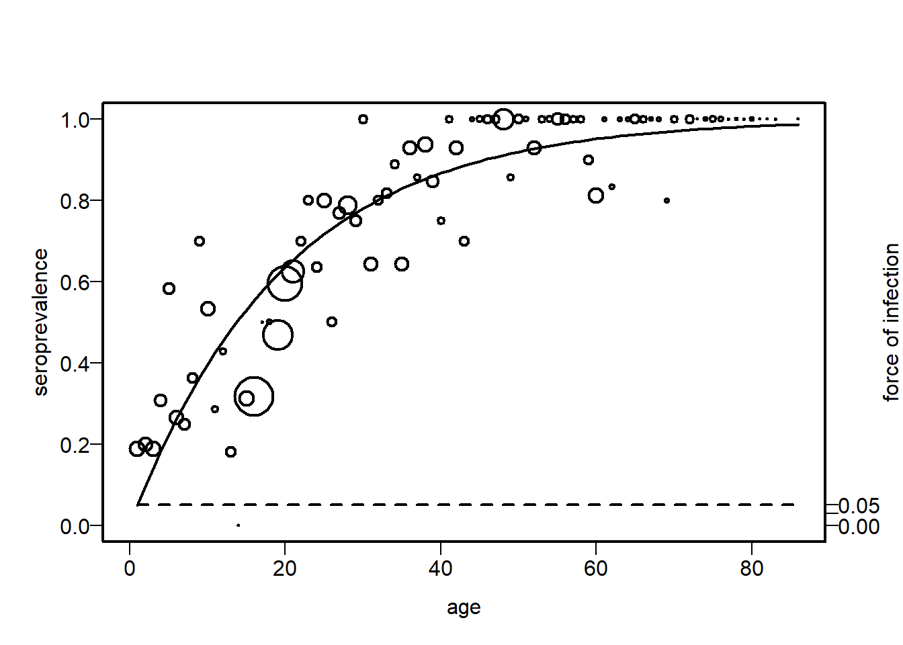
New
a <- hav_bg_1964
neg <- a$tot -a$pos
pos <- a$pos
age <- a$age
tot <- a$tot
model1<- polynomial_model1(age,pos,neg,k =1)
plot_polynomial_model(model1)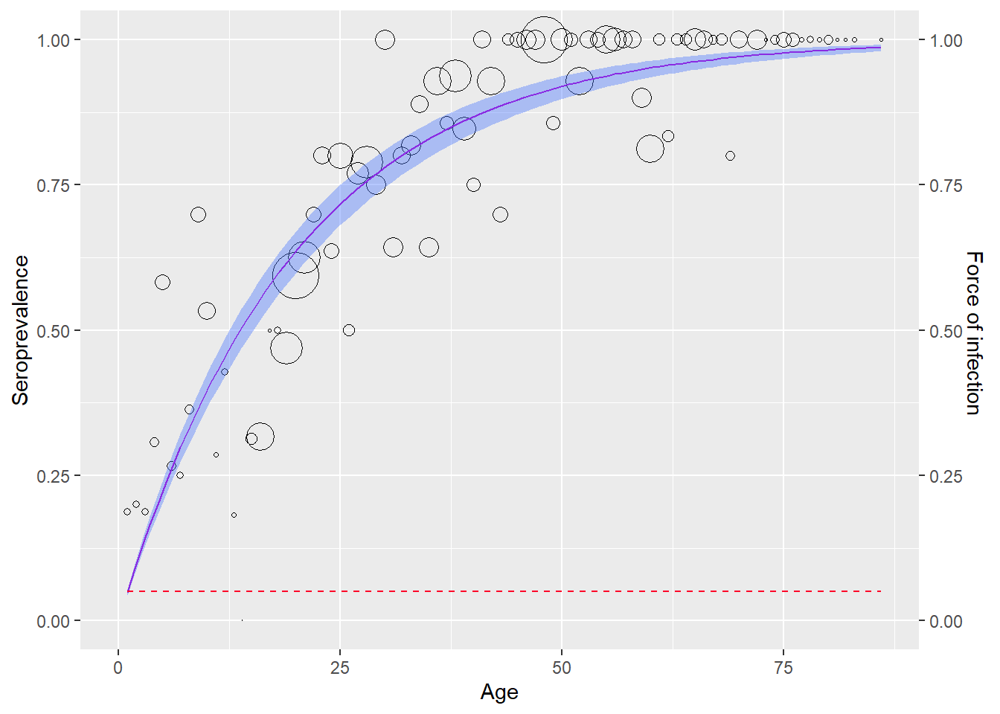
Old
a <- hav_bg_1964
neg <- a$tot -a$pos
pos <- a$pos
age <- a$age
tot <- a$tot
muench_model<- polynomial_model(age,pos,neg,k =2)
plot(muench_model)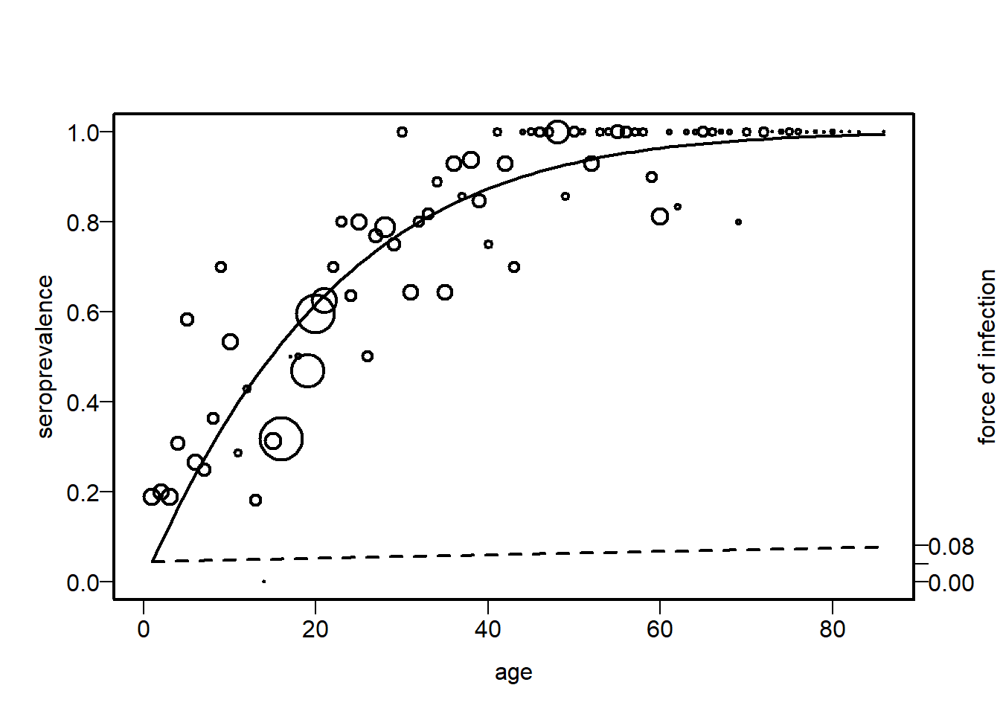
New
a <- hav_bg_1964
neg <- a$tot -a$pos
pos <- a$pos
age <- a$age
tot <- a$tot
model1<- polynomial_model1(age,pos,neg,k =2)
plot_polynomial_model(model1)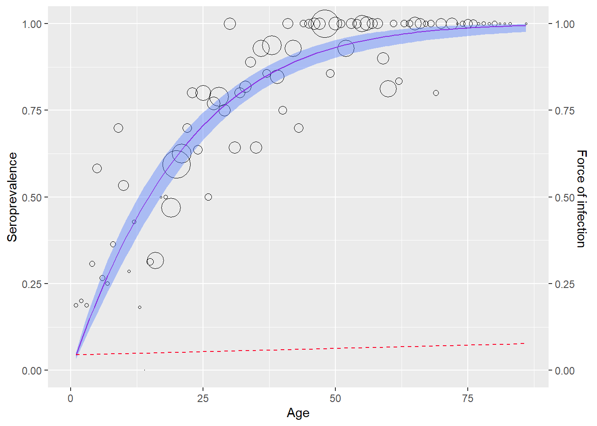
Old
a <- hav_bg_1964
neg <- a$tot -a$pos
pos <- a$pos
age <- a$age
tot <- a$tot
muench_model<- polynomial_model(age,pos,neg,k =3)
plot(muench_model)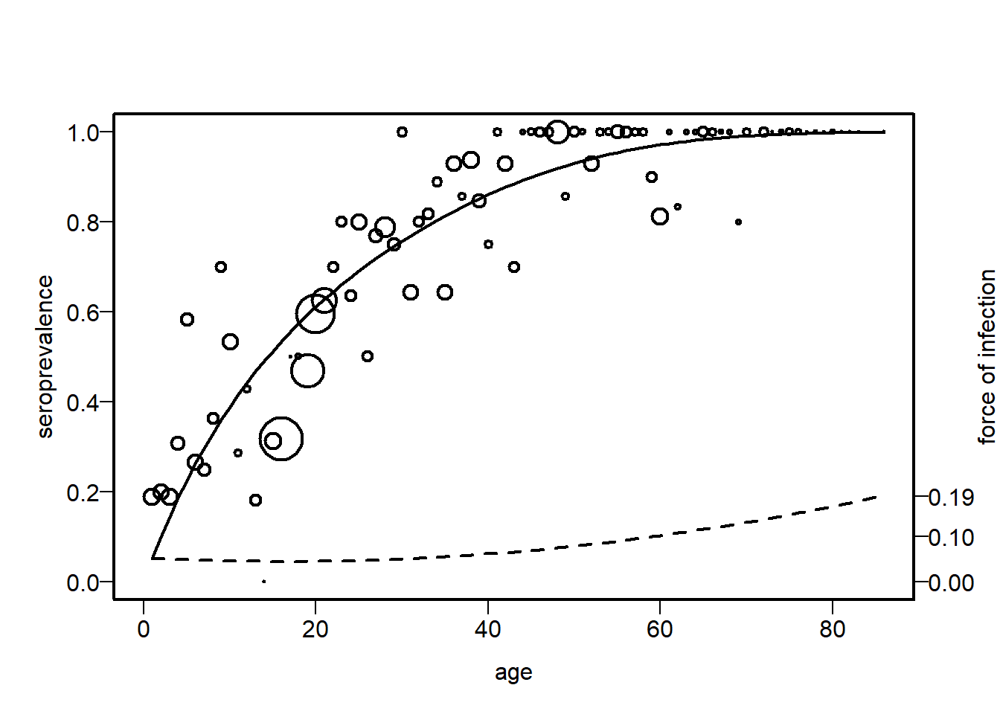
New
a <- hav_bg_1964
neg <- a$tot -a$pos
pos <- a$pos
age <- a$age
tot <- a$tot
model1<- polynomial_model1(age,pos,neg,k =3)
plot_polynomial_model(model1)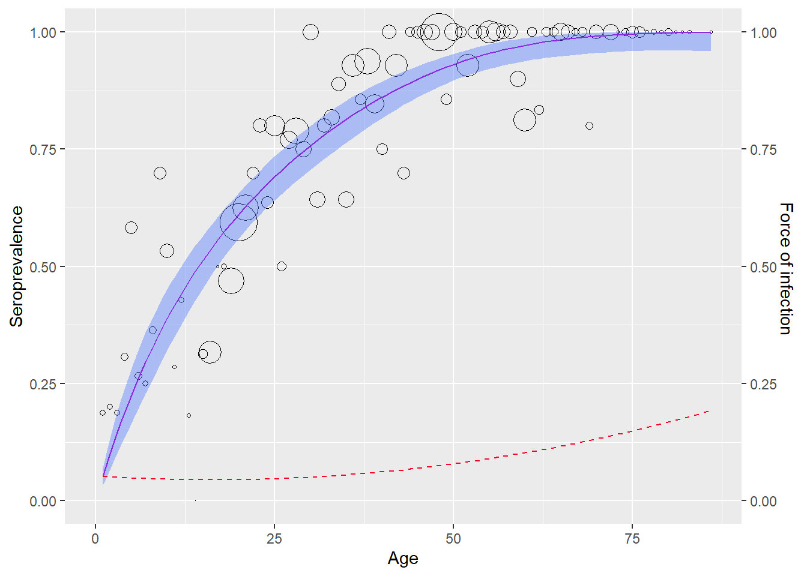
Note: Do FOI em chưa biết cách tính 95% CI nên chưa plot được
Plot Farrington model
Do function predict chỉ dùng cho các kết quả fit ra từ các function như glm,lm,gam. Farrington model dùng mle nên không bỏ vào được function predict để tính được SE
New version of plot.weibull_model function
plot_weibull_model <- function(x,ci = .95, ...){
df_ <- serosv::transform(x$df$t, x$df$spos)
names(df_)[names(df_) == "t"] <- "exposure"
## calculate 95% CI
p <- (1 - ci) / 2
link_inv <- x$info$family$linkinv
dataset <- x$info$model
n <- nrow(dataset) - length(x$info$coefficients)
age_range <- range(dataset$`log(t)`)
exposure_time <- dataset$`log(t)`
mod1 <- predict.glm(x$info,data.frame("log(t)" = exposure_time), se.fit = TRUE)
n1 <- mod1 |> extract(c("fit", "se.fit")) %>%
c(exposure = list(exposure_time), .) %>%
as_tibble() |>
mutate(lwr = link_inv(fit + qt( p, n) * se.fit),
upr = link_inv(fit + qt(1 - p, n) * se.fit),
fit = link_inv(fit)) %>%
select(-se.fit)
out.DF <- data.frame(x = x$df$t, y = n1$fit,
ymin= n1$lwr, ymax= n1$upr)
ggplot(data = data.frame(df_), aes(x = df_$exposure, y = df_$pos/df_$tot))+
geom_point(size = 7*(df_$pos)/max(df_$tot), shape = 1)+
labs(y="Seroprevalence", x="Exposure")+
coord_cartesian(xlim=c(0,max(df_$exposure)), ylim=c(0, 1))+
geom_smooth(aes_auto(out.DF), data=out.DF, stat="identity",
col = "blueviolet",fill = "royalblue1",
lwd = .5) +
geom_line(data = x$df,
aes(x = x$df$t, y = x$foi),
col = "#fc0328",
lwd = 0.5, linetype="dashed")+
scale_y_continuous(
name = "Seroprevalence",
sec.axis = sec_axis(~.*1, name = " Force of infection")
)
}Plot Weibull model
Old
hcv <- hcv_be_2006[order(hcv_be_2006$dur), ]
dur <- hcv$dur
infected <- hcv$seropositive
wb_md <- weibull_model(
t= dur ,
spos= infected
)
plot(wb_md)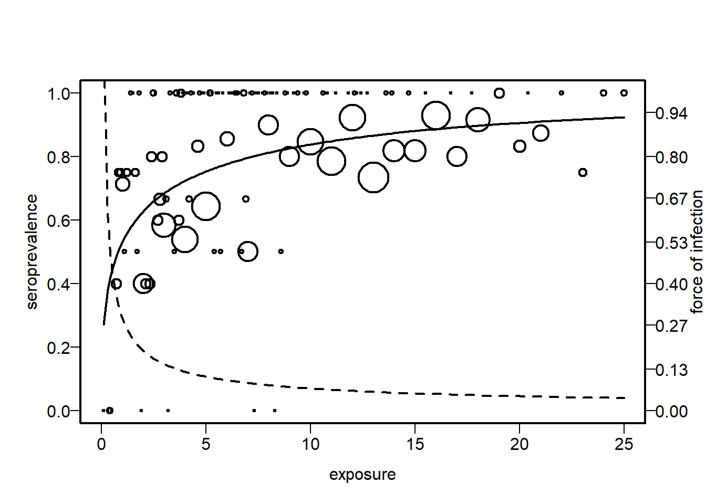
New
hcv <- hcv_be_2006[order(hcv_be_2006$dur), ]
dur <- hcv$dur
infected <- hcv$seropositive
wb_md <- weibull_model(
t= dur ,
spos= infected
)
plot_weibull_model(wb_md)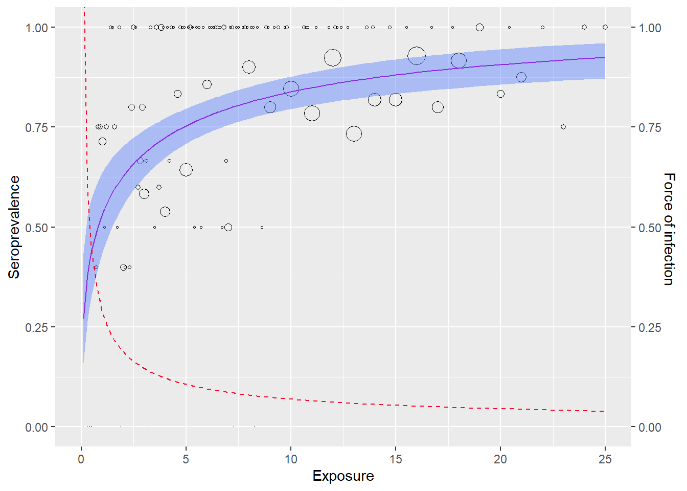
Plot fractional polynomial
plot_fp_model <- function(x,ci = .95,le=100,...){
## calculate 95% CI
p <- (1 - ci) / 2
link_inv <- x$info$family$linkinv
dataset <- data.frame(x$df)
n <- nrow(dataset) - length(x$info$coefficients)
age_range <- range(dataset$age)
ages <- seq(age_range[1], age_range[2], le = le)
mod1 <- predict.glm(x$info,data.frame(age = ages), se.fit = TRUE)
n1 <- data.frame(mod1)[,-3] %>%
c(age = list(ages), .) %>%
as_tibble() |>
mutate(lwr = link_inv(fit + qt( p, n) * se.fit),
upr = link_inv(fit + qt(1 - p, n) * se.fit),
fit = link_inv(fit)) %>%
select(-se.fit)
out.DF <- data.frame(x = n1$age, y = n1$fit,
ymin= n1$lwr, ymax= n1$upr)
ggplot(data = data.frame(x$df), aes(x = x$df$age, y = x$df$pos/x$df$tot))+
geom_point(size = 7*(x$df$tot)/max(x$df$pos), shape = 1)+
labs(y="Seroprevalence", x="Age")+
coord_cartesian(xlim=c(0,max(x$df$age)), ylim=c(min(x$foi), 1))+
geom_smooth(aes_auto(out.DF), data=out.DF, stat="identity",
col = "blueviolet",fill = "royalblue1",
lwd = .5) +
geom_line(data = data.frame(x$df$age[c(-1,-length(x$df$age))], x$foi),
aes(x = x$df$age[c(-1,-length(x$df$age))], y = x$foi),
col = "#fc0328",
lwd = 0.5, linetype="dashed")+
scale_y_continuous(
name = "Seroprevalence",
sec.axis = sec_axis(~.*1, name = " Force of infection")
)
}Old
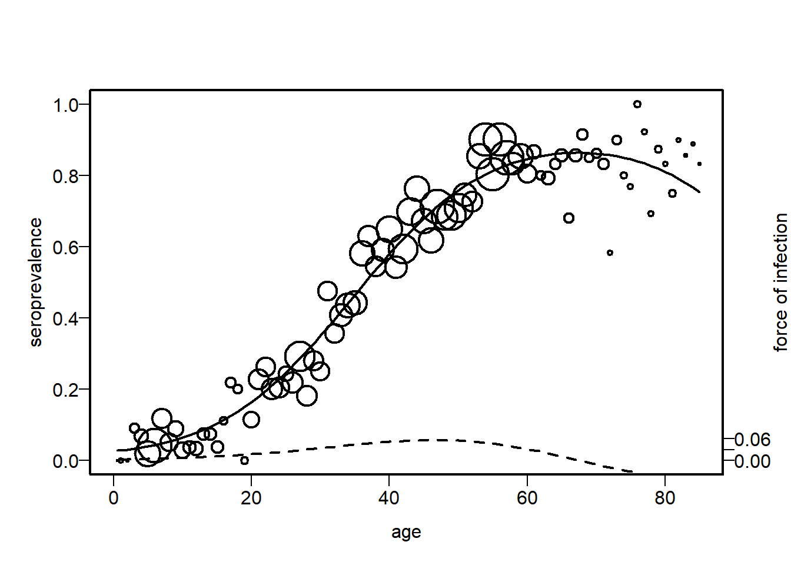
New
plot_fp_model(model,le=100)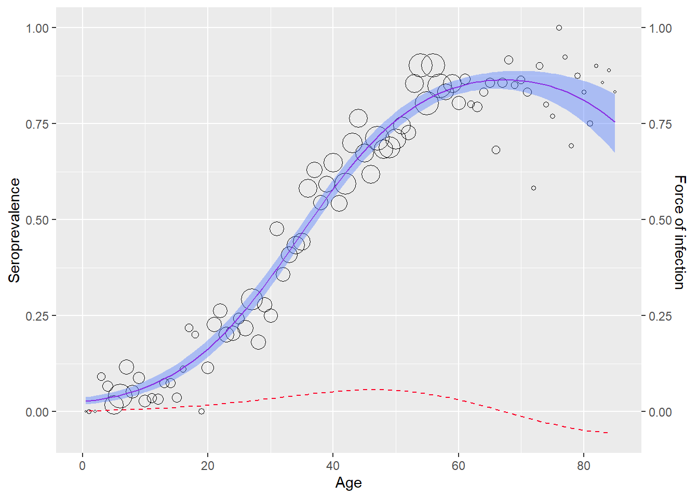
Chap 7
Plot local polynomial model
plot_lp_model <- function(x,ci = .95,...){
## calculate 95% CI
ages <- x$df$age
crit<- crit(x$pi,cov = ci)$crit.val
mod1 <- predict(x$pi, data.frame(a = ages),se.fit = TRUE)
out.DF <- data.frame(x = ages, y = mod1$fit,ymin= mod1$fit-crit*(mod1$se.fit/100),
ymax= mod1$fit+crit*(mod1$se.fit/100))
ggplot(data = data.frame(x$df), aes(x = x$df$age, y = x$df$pos/x$df$tot))+
geom_point(size = 7*(x$df$tot)/max(x$df$pos), shape = 1)+
labs(y="Seroprevalence", x="Age")+
coord_cartesian(xlim=c(0,max(x$df$age)), ylim=c(min(x$foi), max(out.DF$ymax)))+
geom_smooth(aes_auto(out.DF), data=out.DF, stat="identity",
col = "blueviolet",fill = "royalblue1",
lwd = .5)+
geom_line(aes(x = x$df$age, y = x$foi),
col = "#fc0328",
lwd = 0.5, linetype="dashed")+
scale_y_continuous(
name = "Seroprevalence",
sec.axis = sec_axis(~.*1, name = " Force of infection",breaks=seq(0, 1,by=0.2)),
breaks=seq(0, 1,by=0.2)
)
}Old
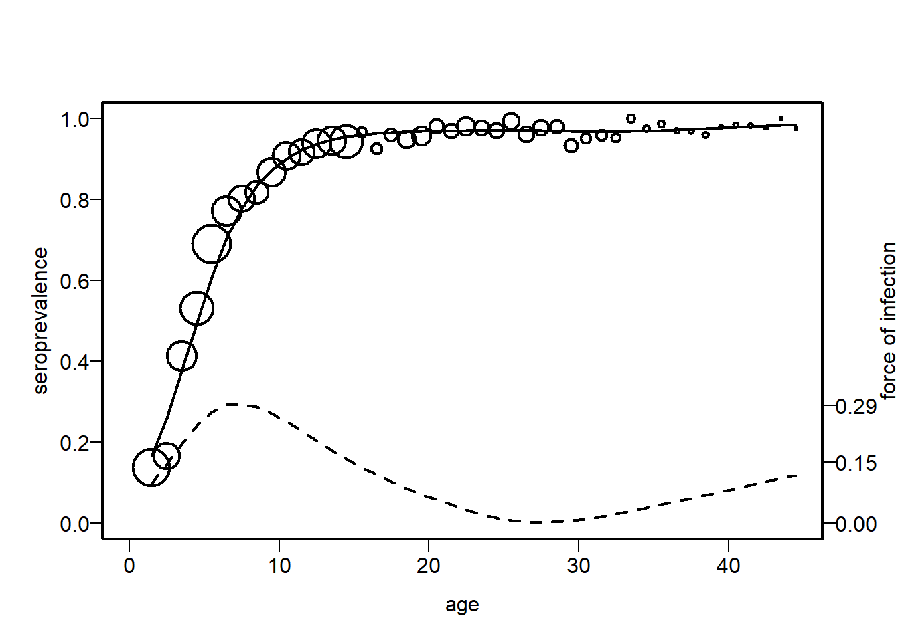
New
library(locfit)
plot_lp_model(lp1,ci=.95)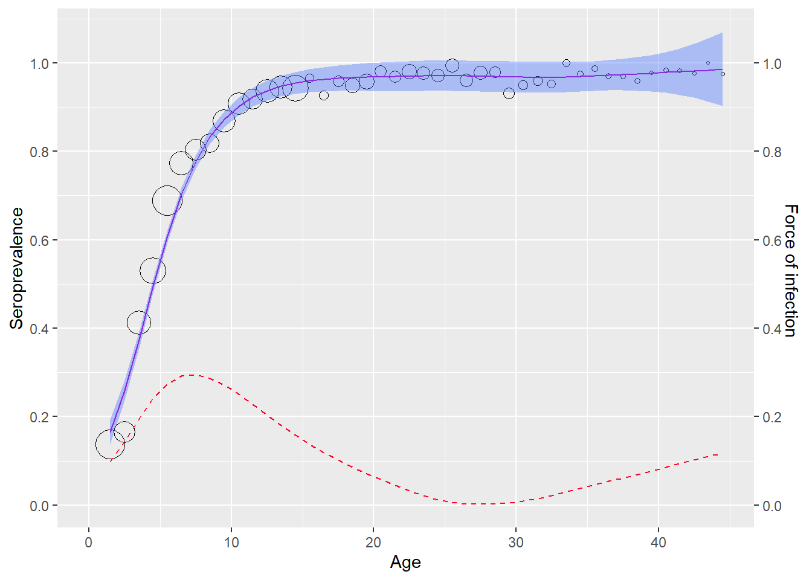
Chap 8: Semiparametric Approaches to Model the Prevalence and Force of Infection
Data của package là data đã được tổng hợp lại còn data trong sách là data theo từng ca
8.2.1.1 Smoothing Spline
Package
## data
parvovirus<-read.table("D:/OUCRU/serobook/code in the book/Chapter4/VZV-B19-BE.dat",header=T)
subset<-(parvovirus$age>0.5)&(parvovirus$age<76)&(!is.na(parvovirus$age))&!is.na(parvovirus$parvores)
parvovirus<-parvovirus[subset,]
library(gam)
find_best_ss_smoothparms <- function(age,seropositive,link = "logit", upper = 100){
y<-seropositive[order(age)]
a<-age[order(age)]
BICf<-function(fit){return(fit$deviance+log(length(fit$y))*(fit$nl.df+2))}
UBRE<-function(fit){return(fit$deviance+log(length(fit$y))*sum(fit$edf))}
out<-matrix(NA,ncol=4,nrow = upper)
for (i in 1:upper){
dfi <- 1+0.5*i
fit.gam <- gam::gam(y~s(a,df=dfi),family=binomial(link = link))
out[i,] <- c(dfi,
BICf(fit.gam),
AIC(fit.gam),
UBRE(fit.gam))
}
df.BIC <- out[which.min(out[,2]),1]
df.AIC <- out[which.min(out[,3]),1]
df.UBRE <- out[which.min(out[,4]),1]
val.BIC <- out[which.min(out[,2]),2]
val.AIC <- out[which.min(out[,3]),3]
val.UBRE <- out[which.min(out[,4]),4]
opt_df <- data.frame(
"Methods" = c("BIC","AIC","UBRE"),
"Value" = c(val.BIC,val.AIC,val.UBRE),
"Effective df" = c(df.BIC,df.AIC,df.UBRE)
)
opt_df
}
find_best_ss_smoothparms(parvovirus$age,parvovirus$parvores) Methods Value Effective.df
1 BIC 3480.799 5.0
2 AIC 3431.338 10.5
3 UBRE 3364.776 51.0Package
smoothing_splines <- function(age,parvores,df,link = "logit"){
## calculate FOI
foi.num <-function(x,p)
{
grid<-sort(unique(x))
pgrid<-(p[order(x)])[duplicated(sort(x))==F]
dp<-diff(pgrid)/diff(grid)
foi<-approx((grid[-1]+grid[-length(grid)])/2,dp,grid[c(-1,-length(grid))])$y/(1-pgrid[c(-1,-length(grid))])
return(list(grid=grid[c(-1,-length(grid))],foi=foi))
}
y<-parvores[order(age)]
a<-age[order(age)]
grid<-sort(unique(round(a)))
neg<-table(y,round(a))[1,]
pos<-table(y,round(a))[2,]
tot<-neg+pos
model <- list()
model$info <- gam::gam(y~s(a,df=df),family=binomial(link = link))
model$sp <- model$info$fitted.values
h1 <- foi.num(a,model$sp)
model$foi <- data.frame("age" = h1$grid, "foi" = h1$foi)
model$df <- list(age=age, pos=pos, tot=tot, grid = grid)
class(model) <- "smoothing_splines"
model
}
outcome <- smoothing_splines(parvovirus$age,parvovirus$parvores,df=5,link = "logit")
summariseee <- function(x){
return(list(x$info,head(x$sp),head(x$foi),
head(x$df$age),head(x$df[2:4])))
}
summariseee(outcome)[[1]]
Call:
gam::gam(formula = y ~ s(a, df = df), family = binomial(link = link))
Degrees of Freedom: 3070 total; 3065 Residual
Residual Deviance: 3432.623
[[2]]
1 2 3 4 5 6
0.1096696 0.1137961 0.1206846 0.1213022 0.1213022 0.1223733
[[3]]
age foi
2 0.8109589 0.03198997
3 1.0478271 0.03391148
4 1.0684932 0.03408850
6 1.1041096 0.03439822
7 1.1068493 0.03442127
8 1.1123288 0.03446771
[[4]]
[1] 18 18 18 18 18 18
[[5]]
[[5]]$pos
1 2 3 4 5 6 7 8 9 10 11 12 13 14 15 16 17 18 19 20
3 5 6 17 20 23 40 39 45 52 53 53 54 58 55 56 67 107 138 76
21 22 23 24 25 26 27 28 29 30 31 32 33 34 35 36 37 38 39 40
27 76 20 20 26 20 57 16 14 15 16 70 21 16 24 19 74 17 23 10
41 42 43 44 45 46 47 48 49 50 51 52 53 54 55 56 57 58 59 60
9 12 9 63 11 6 10 17 11 19 14 12 10 67 11 7 11 11 5 17
61 62 63 64 65 66 72
20 15 25 72 16 2 1
[[5]]$tot
1 2 3 4 5 6 7 8 9 10 11 12 13 14 15 16 17 18 19 20
31 62 60 72 71 84 78 71 82 76 89 88 82 82 79 73 93 140 175 95
21 22 23 24 25 26 27 28 29 30 31 32 33 34 35 36 37 38 39 40
31 91 27 25 34 26 92 26 27 24 26 95 28 27 27 26 92 24 33 10
41 42 43 44 45 46 47 48 49 50 51 52 53 54 55 56 57 58 59 60
12 19 11 82 14 10 12 22 13 22 18 15 12 83 12 10 12 12 6 19
61 62 63 64 65 66 72
25 18 29 88 17 3 1
[[5]]$grid
[1] 1 2 3 4 5 6 7 8 9 10 11 12 13 14 15 16 17 18 19 20 21 22 23 24 25
[26] 26 27 28 29 30 31 32 33 34 35 36 37 38 39 40 41 42 43 44 45 46 47 48 49 50
[51] 51 52 53 54 55 56 57 58 59 60 61 62 63 64 65 66 72Book
parvovirus<-read.table("D:/OUCRU/serobook/code in the book/Chapter4/VZV-B19-BE.dat",header=T)
subset<-(parvovirus$age>0.5)&(parvovirus$age<76)&(!is.na(parvovirus$age))&!is.na(parvovirus$parvores)
parvovirus<-parvovirus[subset,]
y<-parvovirus$parvores[order(parvovirus$age)]
a<-parvovirus$age[order(parvovirus$age)]
s<-parvovirus$sex[order(parvovirus$age)]
grid<-sort(unique(round(a)))
neg<-table(y,round(a))[1,]
pos<-table(y,round(a))[2,]
tot<-neg+pos
## Calculating FOI function
foi.num<-function(x,p)
{
grid<-sort(unique(x))
pgrid<-(p[order(x)])[duplicated(sort(x))==F]
dp<-diff(pgrid)/diff(grid)
foi<-approx((grid[-1]+grid[-length(grid)])/2,dp,grid[c(-1,-length(grid))])$y/(1-pgrid[c(-1,-length(grid))])
return(list(grid=grid[c(-1,-length(grid))],foi=foi))
}
##### Hastie and Tibshirani (use BIC to select the smoothing parameter) ######
BICf<-function(fit){return(fit$deviance+log(length(fit$y))*(fit$nl.df+2))}
library(gam)
out<-matrix(NA,ncol=3,nrow=100)
for (i in 1:100){
dfi<-1+0.5*i
fit.gam.logit.ht<-gam(y~s(a,df=dfi),family=binomial(link="logit"))
fit.gam.cloglog.ht<-gam(y~s(a,df=dfi),family=binomial(link="cloglog"))
out[i,]<-c(dfi,BICf(fit.gam.logit.ht),BICf(fit.gam.cloglog.ht))
}
fit.gam.logit.ht<-gam(y~s(a,df=out[which.min(out[,2]),1]),family=binomial(link="logit"))
fit.gam.logit.htCall:
gam(formula = y ~ s(a, df = out[which.min(out[, 2]), 1]), family = binomial(link = "logit"))
Degrees of Freedom: 3070 total; 3065 Residual
Residual Deviance: 3432.623 Unit test smoothing splines function
library(testthat)
test_that("smoothingsplines returns same result as in the book", {
expected_coefs <- c(-0.13949542, 0.03577971)
expected_D <- 3432.623
df <- parvovirus
model <- smoothing_splines(
df$age, df$parvores,
df = 5,
link="logit"
)
actual_coefs <- unname(c(
coef(model$info)[1], # intercept
coef(model$info)[2]
))
actual_D <- model$info$deviance
expect_equal(actual_coefs, expected_coefs)
expect_equal(actual_D, expected_D)
})Test passed 🎊test_that("find_best_smoothparms returns same result as in the book ", {
expected_p <- c(5,6)
df <- parvovirus
out1 <- find_best_ss_smoothparms(parvovirus$age,
parvovirus$parvores,
link = "logit",upper=100)
out2 <- find_best_ss_smoothparms(parvovirus$age,
parvovirus$parvores,
link = "cloglog",upper=100)
actual_p <- c(out1[1,3],out2[1,3])
expect_equal(actual_p, expected_p)
})Test passed 😸Plot smoothing splines
plot_smoothing_splines <- function(x, ...) {
CEX_SCALER <- 0.02 # arbitrary number for better visual
with(x$df, {
par(las=1,cex.axis=1,cex.lab=1,lwd=2,mgp=c(2, 0.5, 0),mar=c(4,4,4,3))
plot(grid,
pos/tot,
cex=CEX_SCALER*tot,
pch=1,
xlab="age",
ylab="seroprevalence",
xlim=c(0,max(grid)),
ylim=c(-0.1,1))
lines(a,x$sp,lty=1,lwd=2,col=1)
lines(x$foi[,1], x$foi[,2], lwd=2, lty=2)
axis(side=4, at=round(seq(0.0, max(x$foi), length.out=3), 2))
mtext(side=4, "force of infection", las=3, line=2)
})
}
plot_smoothing_splines(outcome)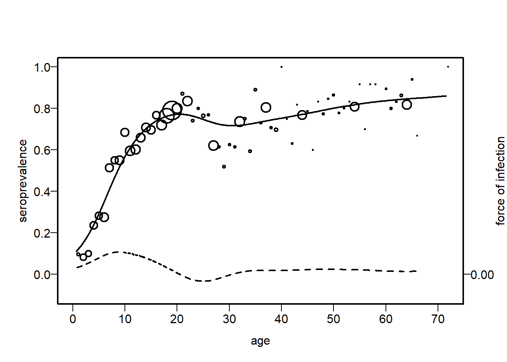
Note: Do smoothing splines fit bằng GAM của gam package nên dùng predict không được
8.2.1.2 Penalize spline
Phần này tác giả dùng function của Eilers and Marx, em có tìm hiểu thì package(mgcv) có function gam với option bs = “ps” tương đương với function này, nhưng làm mọi cách vẫn k ra được kết quả giống package lý do không set up knots được.
Cubic Regression Splines, Thin Plate Regression Splines
library(mgcv)
library(tidyverse)
psfit <- function(age,parvores, link = "logit"){
y<-parvores[order(age)]
a<-age[order(age)]
smooths <- c("tp", "ds", "cr", "cs", "cc", "bs", "ps", "cp", "re", "gp", "ad",
"sz", "fs")
s <- c("Thin plate regression splines",
"Duchon splines",
"Cubic regression splines",
"Shrinkage version of cr",
"Cyclic cubic regression splines",
"B-splines basis",
"P-splines proposed by Eilers and Marx (1996)",
"A cyclic version of a P-spline",
"Random effects",
"Gaussian process smooths",
"Adaptive smoothers",
"Factor smooth interactions",
"Random factor smooth interactions")
p_values <- function(x) {
tibble( "Estimate" = x$p.table[1, 1],
"Std.Error"= x$p.table[1, 2],
"z-value" = x$p.table[1, 3])
}
quality <- function(x) {
tibble(deviance = deviance(x),
AIC = AIC(x),
GCV = x$gcv.ubre)
}
rel <- smooths |>
map_dfr(~ p_values(anova(gam(y ~ s(a, bs = .x),binomial(link = link)))))
rel1 <- smooths |>
map_dfr(~ quality(gam(y ~ s(a, bs = .x),binomial(link = link))))
bind_cols(tibble(Smooth = s), rel,rel1)
}
psfit(parvovirus$age,parvovirus$parvores,link = "logit")# A tibble: 13 × 7
Smooth Estimate Std.Error `z-value` deviance AIC GCV
<chr> <dbl> <dbl> <dbl> <dbl> <dbl> <dbl>
1 Thin plate regression spli… 0.704 0.0429 16.4 3415. 3434. 0.118
2 Duchon splines 0.708 0.0428 16.5 3412. 3432. 0.118
3 Cubic regression splines 0.707 0.0427 16.6 3421. 3436. 0.119
4 Shrinkage version of cr 0.707 0.0427 16.6 3421. 3436. 0.119
5 Cyclic cubic regression sp… 0.718 0.0422 17.0 3448. 3466. 0.128
6 B-splines basis 0.706 0.0429 16.5 3423. 3441. 0.120
7 P-splines proposed by Eile… 0.705 0.0429 16.4 3423. 3441. 0.120
8 A cyclic version of a P-sp… 0.717 0.0427 16.8 3414. 3433. 0.118
9 Random effects -0.217 0.0682 -3.19 3679. 3683. 0.199
10 Gaussian process smooths 0.706 0.0429 16.4 3414. 3433. 0.118
11 Adaptive smoothers 0.710 0.0429 16.6 3407. 3425. 0.115
12 Factor smooth interactions 0.704 0.0429 16.4 3415. 3434. 0.118
13 Random factor smooth inter… 0.704 0.0429 16.4 3415. 3434. 0.118Combine gam fit and plot
library(mgcv)
library(tidyverse)
library(magrittr)
gam_plot <- function(age,parvores,s = "bs",link = "logit", ci = .95, m =1){
y<-parvores[order(age)]
a<-age[order(age)]
grid<-sort(unique(round(a)))
neg<-table(y,round(a))[1,]
pos<-table(y,round(a))[2,]
tot<-neg+pos
## calculate FOI
foi.num <-function(x,p)
{
grid<-sort(unique(x))
pgrid<-(p[order(x)])[duplicated(sort(x))==F]
dp<-diff(pgrid)/diff(grid)
foi<-approx((grid[-1]+grid[-length(grid)])/2,dp,grid[c(-1,-length(grid))])$y/(1-pgrid[c(-1,-length(grid))])
return(list(grid=grid[c(-1,-length(grid))],foi=foi))
}
out <- mgcv::gam(y ~ s(a, bs = s),binomial(link = link))
p <- (1 - ci) / 2
link_inv <- out$family$linkinv
dataset <- out$model
n <- nrow(dataset) - length(out$coefficients)
age_range <- range(dataset[2])
ages <- dataset[2]
bs1 <- predict(out,data.frame(a = ages), se.fit = TRUE) |>
extract(c("fit", "se.fit")) %>%
c(age = list(ages), .) |>
as_tibble() |>
mutate(lwr = m * link_inv(fit + qt( p, n) * se.fit),
upr = m * link_inv(fit + qt(1 - p, n) * se.fit),
fit = m * link_inv(fit)) |>
select(- se.fit)
foi1 <- foi.num(a,bs1$fit)
out.DF <- data.frame(x = a, y = bs1$fit,
ymin= bs1$lwr, ymax = bs1$upr)
out.FOI <- data.frame(x = foi.num(a,bs1$fit)$grid, y = foi.num(a,bs1$fit)$foi,
ymin= foi.num(a,bs1$lwr)$foi, ymax = foi.num(a,bs1$upr)$foi)
fig <- ggplot(data = data.frame(grid,tot,pos,neg), aes(x = grid, y = pos/tot)) +
geom_point(size = 10*(pos)/max(tot), shape = 1)+
labs(y="Seroprevalence", x="Age")+
coord_cartesian(xlim=c(0,max(grid)), ylim = c(-0.1,1)) +
geom_smooth(aes_auto(out.DF), data=out.DF, stat="identity",
col = "blueviolet",fill = "royalblue1",
lwd = 0.5)+
geom_smooth(aes_auto(out.FOI), data=out.FOI, stat="identity",
col = "hotpink1",fill = "#f05bcb",
lwd = 0.5)+
scale_y_continuous(
name = "Seroprevalence",
sec.axis = sec_axis(~.*1, name = " Force of infection")
)
model <- list()
model$sp <- out.DF$y
model$foi <- out.FOI$y
model
return(list(model,fig))
}
model1 <- gam_plot(parvovirus$age, parvovirus$parvores,s = "tp", link = "logit")
list(head(model1[[1]]$sp),head(model1[[1]]$foi))[[1]]
[1] 0.04466852 0.04811639 0.05416722 0.05472790 0.05472790 0.05570702
[[2]]
[1] 0.02538786 0.02854959 0.02884110 0.02935600 0.02939593 0.02947610Package
model1[[2]]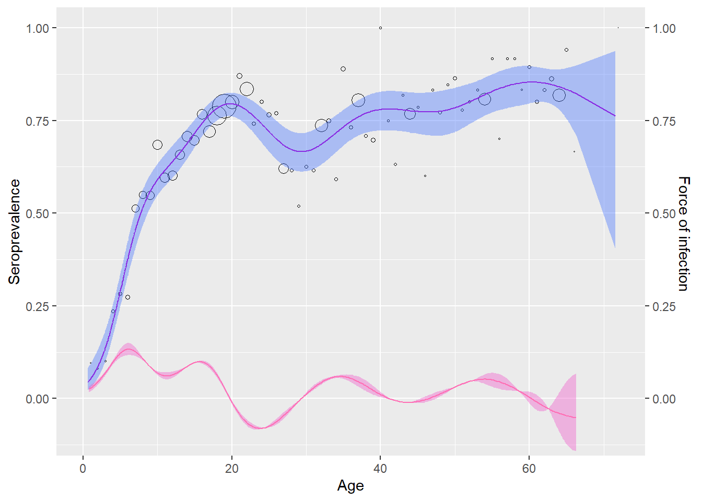
Book
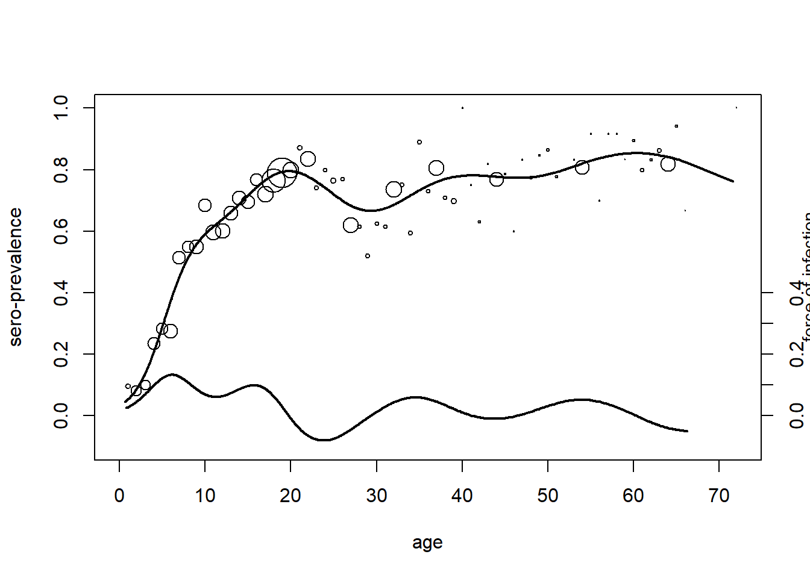
Unit test function gam_plot
library(testthat)
## calculate FOI
foi.num <-function(x,p)
{
grid<-sort(unique(x))
pgrid<-(p[order(x)])[duplicated(sort(x))==F]
dp<-diff(pgrid)/diff(grid)
foi<-approx((grid[-1]+grid[-length(grid)])/2,dp,grid[c(-1,-length(grid))])$y/(1-pgrid[c(-1,-length(grid))])
return(list(grid=grid[c(-1,-length(grid))],foi=foi))
}
test_that("gam_plot returns same result as in the book", {
expected_sp_summary <- mgcv::gam(y~s(a,bs="tp"),family=binomial(link="logit"))$fitted.values
expected_sp <- c(min(expected_sp_summary),mean(expected_sp_summary),median(expected_sp_summary),max(expected_sp_summary))
expected_foi <- c(-0.08079526,0.05375112,0.06207138,0.13285975)
df <- parvovirus
model <- gam_plot(parvovirus$age, parvovirus$parvores,s = "tp", link = "logit")
actual_sp <- c(min(model[[1]]$sp),mean(model[[1]]$sp),median(model[[1]]$sp),max(model[[1]]$sp))
actual_foi <- c(min(model[[1]]$foi),mean(model[[1]]$foi),median(model[[1]]$foi),max(model[[1]]$foi))
expect_equal(actual_sp, expected_sp)
expect_equal(actual_foi, expected_foi)
})Test passed 🎉Generalized Linear Mixed Model Framework
library(mgcv)
library(tidyverse)
library(magrittr)
glmm_plot <- function(age,parvores,s = "bs",link = "logit", ci = .95, m = 1){
y<-parvores[order(age)]
a<-age[order(age)]
grid<-sort(unique(round(a)))
neg<-table(y,round(a))[1,]
pos<-table(y,round(a))[2,]
tot<-neg+pos
## calculate FOI
foi.num <-function(x,p)
{
grid<-sort(unique(x))
pgrid<-(p[order(x)])[duplicated(sort(x))==F]
dp<-diff(pgrid)/diff(grid)
foi<-approx((grid[-1]+grid[-length(grid)])/2,dp,grid[c(-1,-length(grid))])$y/(1-pgrid[c(-1,-length(grid))])
return(list(grid=grid[c(-1,-length(grid))],foi=foi))
}
out <- mgcv::gamm(y ~ s(a, bs = s ),family = binomial(link = link))
p <- (1 - ci) / 2
link_inv <- out$gam$family$linkinv
dataset <- out$gam$model[,1:2]
n <- nrow(dataset) - length(out$gam$coefficients)
age_range <- range(dataset[2])
ages <- dataset[2]
bs1 <- predict.gam(out$gam,data.frame(a = ages), se.fit = TRUE) |>
extract(c("fit", "se.fit")) %>%
c(age = list(ages), .) |>
as_tibble() |>
mutate(lwr = m * link_inv(fit + qt( p, n) * se.fit),
upr = m * link_inv(fit + qt(1 - p, n) * se.fit),
fit = m * link_inv(fit)) |>
select(- se.fit)
out.DF <- data.frame(x = a, y = bs1$fit,
ymin= bs1$lwr, ymax = bs1$upr)
out.FOI <- data.frame(x = foi.num(a,bs1$fit)$grid, y = foi.num(a,bs1$fit)$foi,
ymin= foi.num(a,bs1$lwr)$foi, ymax = foi.num(a,bs1$upr)$foi)
fig <- ggplot(data = data.frame(grid,tot,pos,neg), aes(x = grid, y = pos/tot)) +
geom_point(size = 10*(pos)/max(tot), shape = 1)+
labs(y="Seroprevalence", x="Age")+
coord_cartesian(xlim=c(0,max(grid)), ylim = c(-0.1,1)) +
geom_smooth(aes_auto(out.DF), data=out.DF, stat="identity",
col = "blueviolet",fill = "royalblue1",
lwd = 0.5)+
geom_smooth(aes_auto(out.FOI), data=out.FOI, stat="identity",
col = "hotpink1",fill = "#f05bcb",
lwd = 0.5)+
scale_y_continuous(
name = "Seroprevalence",
sec.axis = sec_axis(~.*1, name = " Force of infection")
)
model <- list()
model$sp <- out.DF$y
model$foi <- out.FOI$y
model
return(list(model,fig))
}
model2 <- glmm_plot(age = parvovirus$age, parvores = parvovirus$parvores,s = "tp", link = "logit")
Maximum number of PQL iterations: 20 iteration 1iteration 2iteration 3iteration 4list(head(model2[[1]]$sp),head(model2[[1]]$foi))[[1]]
[1] 0.05740154 0.06114149 0.06760632 0.06819948 0.06819948 0.06923306
[[2]]
[1] 0.02775014 0.03066193 0.03092804 0.03139591 0.03143214 0.03150485Package
model2[[2]]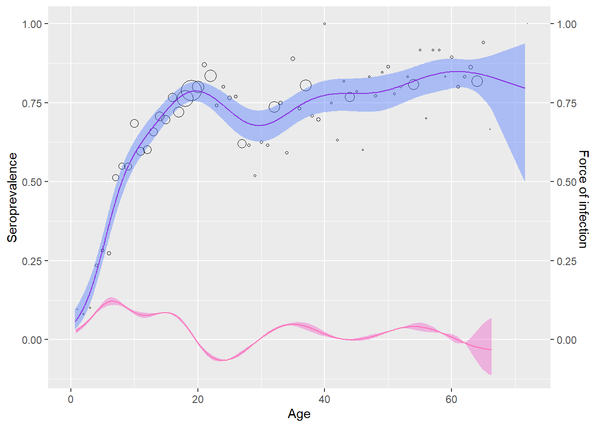
Book
Maximum number of PQL iterations: 20 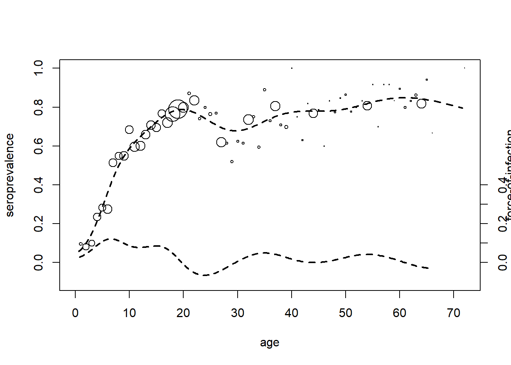
Unit test of glmm_plot
library(testthat)
test_that("glmm_plot returns same result as in the book", {
expected_sp_summary <- predict.gam(gamm(y~s(a,bs="tp"),
family=binomial(link="logit"))$gam, type = "response")
expected_foi_summary <- foi.num(a,predict.gam(gamm(y~s(a,bs="tp"),
family=binomial(link="logit"))$gam,type="response"))$foi
expected_sp <- c(min(expected_sp_summary),mean(expected_sp_summary),median(expected_sp_summary),max(expected_sp_summary))
expected_foi <- c(min(expected_foi_summary),mean(expected_foi_summary),median(expected_foi_summary),max(expected_foi_summary))
df <- parvovirus
model <- glmm_plot(parvovirus$age, parvovirus$parvores,s = "tp", link = "logit")
actual_sp <- c(min(model[[1]]$sp),mean(model[[1]]$sp),
median(model[[1]]$sp),max(model[[1]]$sp))
actual_foi <- c(min(model[[1]]$foi),mean(model[[1]]$foi),
median(model[[1]]$foi),max(model[[1]]$foi))
expect_equal(actual_sp, expected_sp)
expect_equal(actual_foi, expected_foi)
})
Maximum number of PQL iterations: 20
Maximum number of PQL iterations: 20
Maximum number of PQL iterations: 20
Test passed 🎊Adaptive Spline Smoothing
Function AdaptFit bị xóa trên CRAN rồi, có thể dùng mgcv::gam để fit nhưng không có data để unit test
Chap 9 The Constraint of Monotonicity
9.2 Piecewise Constant Forces of Infection
Hiện đang fail
9.3.2 Keiding(1991)
pavit<- function(pos=pos,tot=rep(1,length(pos)))
{
gi<- pos/tot
pai1 <- pai2 <- gi
N <- length(pai1)
ni<-tot
for(i in 1:(N - 1)) {
if(pai2[i] > pai2[i + 1]) {
pool <- (ni[i]*pai1[i] + ni[i+1]*pai1[i + 1])/(ni[i]+ni[i+1])
pai2[i:(i + 1)] <- pool
k <- i + 1
for(j in (k - 1):1) {
if(pai2[j] > pai2[k]) {
pool.2 <- sum(ni[j:k]*pai1[j:k])/(sum(ni[j:k]))
pai2[j:k] <- pool.2
}
}
}
}
return(list(pai1=pai1,pai2=pai2))
}
foi.num<-function(x,p)
{
grid<-sort(unique(x))
pgrid<-(p[order(x)])[duplicated(sort(x))==F]
dp<-diff(pgrid)/diff(grid)
foi<-approx((grid[-1]+grid[-length(grid)])/2,dp,grid[c(-1,-length(grid))])$y/(1-pgrid[c(-1,-length(grid))])
return(list(grid=grid[c(-1,-length(grid))],foi=foi))
}
#' Keiding model
#'
#' @param age the age vector
#' @param pos the positive vector
#' @param tot the total vector
#' @param kernel kernel-based estimate
#' @param bw bandwidth
#'
#'
#' @examples
#' df <- hav_bg_1964
#' model <- keiding_model(df$age,df$pos,df$tot, kernel = "normal", bw = 30)
#' plot(model)
keiding_model <- function(age, pos, tot,kernel ="normal", bw){
grid <- sort(age)
model <- list()
xx <- pavit(pos=pos,tot=tot)
foi.k1<-foi.num(grid,xx$pai2)$foi
foi.k1[is.na(foi.k1)]<-0
foi.k1[foi.k1>10]<-0
age.k1<-foi.num(grid,xx$pai2)$grid
fit.k1<- ksmooth(age.k1,foi.k1,kernel=kernel,bandwidth=bw,n.points=length(age.k1))
model$age <- fit.k1$x
model$foi <- fit.k1$y
model$sp <- 1-exp(-cumsum(c(age.k1[1],diff(age.k1))*model$foi))
model$df <- list(age=age, pos=pos, tot=tot,grid = grid)
class(model) <- "keiding_model"
model
}
library(serosv)
df <- hav_bg_1964
model <- keiding_model(df$age,df$pos,df$tot, kernel = "normal", bw = 30)
model$age
[1] 2.0000 3.0125 4.0250 5.0375 6.0500 7.0625 8.0750 9.0875 10.1000
[10] 11.1125 12.1250 13.1375 14.1500 15.1625 16.1750 17.1875 18.2000 19.2125
[19] 20.2250 21.2375 22.2500 23.2625 24.2750 25.2875 26.3000 27.3125 28.3250
[28] 29.3375 30.3500 31.3625 32.3750 33.3875 34.4000 35.4125 36.4250 37.4375
[37] 38.4500 39.4625 40.4750 41.4875 42.5000 43.5125 44.5250 45.5375 46.5500
[46] 47.5625 48.5750 49.5875 50.6000 51.6125 52.6250 53.6375 54.6500 55.6625
[55] 56.6750 57.6875 58.7000 59.7125 60.7250 61.7375 62.7500 63.7625 64.7750
[64] 65.7875 66.8000 67.8125 68.8250 69.8375 70.8500 71.8625 72.8750 73.8875
[73] 74.9000 75.9125 76.9250 77.9375 78.9500 79.9625 80.9750 81.9875 83.0000
$foi
[1] 0.03448694 0.03501846 0.03562761 0.03631591 0.03708419 0.03793256
[7] 0.03886042 0.03986643 0.04094858 0.04210426 0.04333037 0.04462342
[13] 0.04597970 0.04739544 0.04886690 0.05039055 0.05196624 0.05359094
[19] 0.05525597 0.05696227 0.05870694 0.06048644 0.06229616 0.06413790
[25] 0.06599061 0.06785033 0.06970172 0.07152870 0.07331112 0.07502561
[31] 0.07664602 0.07814396 0.07948976 0.08065350 0.08160628 0.08232159
[37] 0.08277660 0.08295355 0.08284218 0.08243709 0.08174149 0.08076648
[43] 0.07953085 0.07806058 0.07638864 0.07455015 0.07258610 0.07054025
[49] 0.06845374 0.06636604 0.06431372 0.06232853 0.06043599 0.05865467
[55] 0.05699600 0.05546415 0.05405642 0.05276397 0.05157185 0.05046314
[61] 0.04941852 0.04841314 0.04742593 0.04643763 0.04542886 0.04438489
[67] 0.04329153 0.04214023 0.04092468 0.03964495 0.03830585 0.03690961
[73] 0.03546341 0.03397634 0.03245855 0.03092095 0.02937461 0.02782659
[79] 0.02628853 0.02478159 0.02330453
$sp
[1] 0.06664893 0.09876779 0.13031129 0.16132822 0.19186006 0.22194075
[7] 0.25159651 0.28084578 0.30969934 0.33816056 0.36622588 0.39388533
[13] 0.42112331 0.44791940 0.47424930 0.50008574 0.52540094 0.55016564
[19] 0.57434743 0.59791593 0.62084153 0.64309565 0.66465104 0.68548438
[25] 0.70556945 0.72488400 0.74340702 0.76111975 0.77800579 0.79405160
[31] 0.80924695 0.82358561 0.83706588 0.84969111 0.86147010 0.87241733
[37] 0.88255291 0.89190241 0.90049656 0.90837033 0.91556233 0.92211393
[43] 0.92806835 0.93346982 0.93836271 0.94279067 0.94679614 0.95041985
[49] 0.95370024 0.95667322 0.95937202 0.96182700 0.96406569 0.96611278
[55] 0.96799021 0.96971726 0.97131078 0.97278530 0.97415323 0.97542518
[61] 0.97661011 0.97771551 0.97874771 0.97971205 0.98061309 0.98145476
[67] 0.98224048 0.98297332 0.98365606 0.98490193 0.98546934 0.98599588
[73] 0.98648381 0.98693533 0.98735258 0.98773766 0.98809263 0.98841940
[79] 0.98871987 0.98899598 0.98924945
$df
$df$age
[1] 1 2 3 4 5 6 7 8 9 10 11 12 13 14 15 16 17 18 19 20 21 22 23 24 25
[26] 26 27 28 29 30 31 32 33 34 35 36 37 38 39 40 41 42 43 44 45 46 47 48 49 50
[51] 51 52 53 54 55 56 57 58 59 60 61 62 63 64 65 66 67 68 69 70 72 73 74 75 76
[76] 77 78 79 80 81 82 83 86
$df$pos
[1] 3 3 3 4 7 4 3 4 7 8 2 3 2 0 5 13 1 3 15 22 15 7 8 7 12
[26] 5 10 15 9 9 9 8 9 8 9 13 6 15 11 6 8 13 7 5 7 9 9 22 6 10
[51] 6 13 8 7 13 11 8 8 9 13 5 5 5 5 10 8 4 5 4 8 9 1 4 7 6
[76] 2 3 2 4 1 1 2 1
$df$tot
[1] 16 15 16 13 12 15 12 11 10 15 7 7 11 1 16 41 2 6 32 37 24 10 10 11 15
[26] 10 13 19 12 9 14 10 11 9 14 14 7 16 13 8 8 14 10 5 7 9 9 22 7 10
[51] 6 14 8 7 13 11 8 8 10 16 5 6 5 5 10 8 4 5 5 8 9 1 4 7 6
[76] 2 3 2 4 1 1 2 1
$df$grid
[1] 1 2 3 4 5 6 7 8 9 10 11 12 13 14 15 16 17 18 19 20 21 22 23 24 25
[26] 26 27 28 29 30 31 32 33 34 35 36 37 38 39 40 41 42 43 44 45 46 47 48 49 50
[51] 51 52 53 54 55 56 57 58 59 60 61 62 63 64 65 66 67 68 69 70 72 73 74 75 76
[76] 77 78 79 80 81 82 83 86
attr(,"class")
[1] "keiding_model"Plot Keiding Model
#' plot() overloading Keiding model
#'
#' @param x the keiding model object.
#' @param ... arbitrary params
#'
#'
#' @export
plot.keiding_model <- function(x, ...) {
CEX_SCALER <- 4 # arbitrary number for better visual
with(x$df, {
par(las=1,cex.axis=1,cex.lab=1,lwd=2,mgp=c(2, 0.5, 0),mar=c(4,4,4,3))
plot(
grid,
pos/tot,
cex=CEX_SCALER*tot/max(tot),
xlab="age", ylab="seroprevalence",
xlim=c(0, max(age)), ylim=c(0,1)
)
lines(x$age, x$sp, lwd=2)
lines(x$age, x$foi, lwd=2, lty=2)
axis(side=4, at=round(seq(0.0, max(x$foi), length.out=3), 2))
mtext(side=4, "force of infection", las=3, line=2)
})
}
plot(model)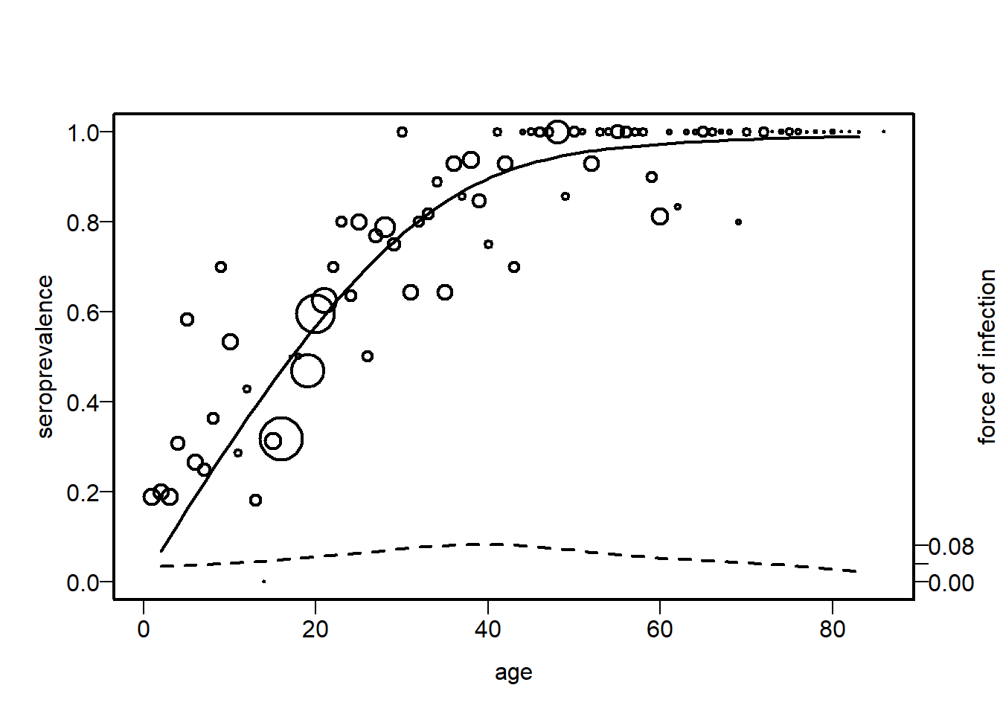
Note: Keiding model ước tính FOI trước theo monotonicity rồi từ FOI mới tính ra SP nên không dùng function predict cho SP được
Unit test Keiding model
library(testthat)
test_that("keiding_model returns expected results", {
expected_foi_summary <- c(0.02330453, 0.05276397, 0.05504527, 0.08295355)
expected_sp_summary <- c(0.06664893, 0.9155623, 0.7704096, 0.9892495)
df <- hav_bg_1964
model <- keiding_model(
df$age,df$pos,df$tot,
kernel = "normal", bw = 30)
actual_foi_summary <- c(
min(model$foi), median(model$foi), mean(model$foi), max(model$foi)
)
actual_sp_summary <- c(
min(model$sp), median(model$sp), mean(model$sp), max(model$sp)
)
expect_equal(actual_foi_summary, expected_foi_summary, tolerance=0.000001)
expect_equal(actual_sp_summary, expected_sp_summary, tolerance=0.000001)
})Test passed 🥇Smooth then constraint model
library(locfit)
pavit<- function(pos=pos,tot=rep(1,length(pos)))
{
gi<- pos/tot
pai1 <- pai2 <- gi
N <- length(pai1)
ni<-tot
for(i in 1:(N - 1)) {
if(pai2[i] > pai2[i + 1]) {
pool <- (ni[i]*pai1[i] + ni[i+1]*pai1[i + 1])/(ni[i]+ni[i+1])
pai2[i:(i + 1)] <- pool
k <- i + 1
for(j in (k - 1):1) {
if(pai2[j] > pai2[k]) {
pool.2 <- sum(ni[j:k]*pai1[j:k])/(sum(ni[j:k]))
pai2[j:k] <- pool.2
}
}
}
}
return(list(pai1=pai1,pai2=pai2))
}
#' Returns the optimal smoothing parameter of GCV
#'
#' Refers to section 9.3.3.
#' @param age the age vector
#' @param pos the positive vector
#' @param tot the total vector
#' @param alphagrid a alpha sequence
#' @param family family of gcvplot. Default to "binomal"
#' @param deg degree of gcvplot
#'
#' @examples
#' df <- hav_bg_1964
#' find_the_min_alpha(df$age,df$pos,df$tot,
#' seq(0.2,2, by=0.05),family = "binomial", deg =2)
find_the_min_alpha <- function(age,pos,tot,alphagrid, family = "binomial",deg){
neg <- tot - pos
a<-c(rep(age,pos),rep(age,neg))
y<-c(rep(rep(1,length(age)),pos),rep(rep(0,length(age)),neg))
gcvp<-gcvplot(y~a,family="binomial",alpha= alphagrid,deg = deg)
alpha<-alphagrid[which.min(gcvp$values)]
alpha
}
#' A Smooth then constrain model
#'
#' @param age the age vector
#' @param pos the positive vector
#' @param tot the total vector
#' @param alpha alpha of local fit
#' @param family family of local fit
#'
#' @examples
#' df <- hav_bg_1964
#' model <- stc(df$age,df$pos,df$tot,
#' alpha = 0.35,family = "binomial")
stc <- function(age,pos,tot,alpha,family = "binomial"){
neg <- tot - pos
grid <- sort(age)
model <- list()
a<-c(rep(age,pos),rep(age,neg))
y<-c(rep(rep(1,length(age)),pos),rep(rep(0,length(age)),neg))
y<-y[order(a)]
a<-a[order(a)]
lpfit1 <- locfit(y~a,family= family ,alpha=alpha)
lpfitd1 <- locfit(y~a,deriv=1,family= family,alpha=alpha)
lpfoi1 <- fitted(lpfitd1)*fitted(lpfit1)
model$sp <- pavit(pos=fitted(lpfit1))$pai2
lpfoi2 <- apply(cbind(0,fitted(lpfitd1)),1,max)*model$sp
model$foi <- apply(cbind(0,lpfoi2),1,max)
model$df <- list(age=age, pos=pos, tot = tot, grid = grid ,a=a )
class(model) <- "smooth_then_constrain_model"
model
}
df <- hav_bg_1964
model <- stc(df$age,df$pos,df$tot,
alpha = 0.35,family = "binomial")
model$sp
[1] 0.1736335 0.1736335 0.1736335 0.1736335 0.1736335 0.1736335 0.1736335
[8] 0.1736335 0.1736335 0.1736335 0.1736335 0.1736335 0.1736335 0.1736335
[15] 0.1736335 0.1736335 0.2149586 0.2149586 0.2149586 0.2149586 0.2149586
[22] 0.2149586 0.2149586 0.2149586 0.2149586 0.2149586 0.2149586 0.2149586
[29] 0.2149586 0.2149586 0.2149586 0.2565993 0.2565993 0.2565993 0.2565993
[36] 0.2565993 0.2565993 0.2565993 0.2565993 0.2565993 0.2565993 0.2565993
[43] 0.2565993 0.2565993 0.2565993 0.2565993 0.2565993 0.2963602 0.2963602
[50] 0.2963602 0.2963602 0.2963602 0.2963602 0.2963602 0.2963602 0.2963602
[57] 0.2963602 0.2963602 0.2963602 0.2963602 0.3323622 0.3323622 0.3323622
[64] 0.3323622 0.3323622 0.3323622 0.3323622 0.3323622 0.3323622 0.3323622
[71] 0.3323622 0.3323622 0.3631954 0.3631954 0.3631954 0.3631954 0.3631954
[78] 0.3631954 0.3631954 0.3631954 0.3631954 0.3631954 0.3631954 0.3631954
[85] 0.3631954 0.3631954 0.3631954 0.3641736 0.3641736 0.3641736 0.3641736
[92] 0.3641736 0.3641736 0.3641736 0.3641736 0.3641736 0.3641736 0.3641736
[99] 0.3641736 0.3641736 0.3641736 0.3641736 0.3641736 0.3641736 0.3641736
[106] 0.3641736 0.3641736 0.3641736 0.3641736 0.3641736 0.3641736 0.3641736
[113] 0.3641736 0.3641736 0.3641736 0.3641736 0.3641736 0.3641736 0.3641736
[120] 0.3641736 0.3641736 0.3641736 0.3641736 0.3641736 0.3641736 0.3641736
[127] 0.3641736 0.3641736 0.3641736 0.3641736 0.3641736 0.3641736 0.3641736
[134] 0.3641736 0.3641736 0.3641736 0.3641736 0.3641736 0.3641736 0.3641736
[141] 0.3641736 0.3641736 0.3641736 0.3641736 0.3641736 0.3641736 0.3641736
[148] 0.3641736 0.3641736 0.3641736 0.3641736 0.3641736 0.3641736 0.3641736
[155] 0.3641736 0.3641736 0.3641736 0.3641736 0.3641736 0.3641736 0.3641736
[162] 0.3641736 0.3641736 0.3641736 0.3641736 0.3641736 0.3641736 0.3641736
[169] 0.3641736 0.3641736 0.3641736 0.3641736 0.3641736 0.3641736 0.3641736
[176] 0.3641736 0.3641736 0.3641736 0.3641736 0.3641736 0.3641736 0.3641736
[183] 0.3641736 0.3641736 0.3641736 0.3641736 0.3641736 0.3641736 0.3641736
[190] 0.3641736 0.3641736 0.3641736 0.3641736 0.3641736 0.3641736 0.3641736
[197] 0.3641736 0.3641736 0.3641736 0.3641736 0.3641736 0.3641736 0.3641736
[204] 0.3641736 0.3641736 0.3641736 0.3641736 0.3641736 0.3641736 0.3641736
[211] 0.3641736 0.3641736 0.3641736 0.3641736 0.3641736 0.3641736 0.3641736
[218] 0.3641736 0.3751780 0.3751780 0.4216146 0.4216146 0.4216146 0.4216146
[225] 0.4216146 0.4216146 0.4825866 0.4825866 0.4825866 0.4825866 0.4825866
[232] 0.4825866 0.4825866 0.4825866 0.4825866 0.4825866 0.4825866 0.4825866
[239] 0.4825866 0.4825866 0.4825866 0.4825866 0.4825866 0.4825866 0.4825866
[246] 0.4825866 0.4825866 0.4825866 0.4825866 0.4825866 0.4825866 0.4825866
[253] 0.4825866 0.4825866 0.4825866 0.4825866 0.4825866 0.4825866 0.5488385
[260] 0.5488385 0.5488385 0.5488385 0.5488385 0.5488385 0.5488385 0.5488385
[267] 0.5488385 0.5488385 0.5488385 0.5488385 0.5488385 0.5488385 0.5488385
[274] 0.5488385 0.5488385 0.5488385 0.5488385 0.5488385 0.5488385 0.5488385
[281] 0.5488385 0.5488385 0.5488385 0.5488385 0.5488385 0.5488385 0.5488385
[288] 0.5488385 0.5488385 0.5488385 0.5488385 0.5488385 0.5488385 0.5488385
[295] 0.5488385 0.6100396 0.6100396 0.6100396 0.6100396 0.6100396 0.6100396
[302] 0.6100396 0.6100396 0.6100396 0.6100396 0.6100396 0.6100396 0.6100396
[309] 0.6100396 0.6100396 0.6100396 0.6100396 0.6100396 0.6100396 0.6100396
[316] 0.6100396 0.6100396 0.6100396 0.6100396 0.6573397 0.6573397 0.6573397
[323] 0.6573397 0.6573397 0.6573397 0.6573397 0.6573397 0.6573397 0.6573397
[330] 0.6881997 0.6881997 0.6881997 0.6881997 0.6881997 0.6881997 0.6881997
[337] 0.6881997 0.6881997 0.6881997 0.7105668 0.7105668 0.7105668 0.7105668
[344] 0.7105668 0.7105668 0.7105668 0.7105668 0.7105668 0.7105668 0.7105668
[351] 0.7272391 0.7272391 0.7272391 0.7272391 0.7272391 0.7272391 0.7272391
[358] 0.7272391 0.7272391 0.7272391 0.7272391 0.7272391 0.7272391 0.7272391
[365] 0.7272391 0.7403408 0.7403408 0.7403408 0.7403408 0.7403408 0.7403408
[372] 0.7403408 0.7403408 0.7403408 0.7403408 0.7517267 0.7517267 0.7517267
[379] 0.7517267 0.7517267 0.7517267 0.7517267 0.7517267 0.7517267 0.7517267
[386] 0.7517267 0.7517267 0.7517267 0.7626594 0.7626594 0.7626594 0.7626594
[393] 0.7626594 0.7626594 0.7626594 0.7626594 0.7626594 0.7626594 0.7626594
[400] 0.7626594 0.7626594 0.7626594 0.7626594 0.7626594 0.7626594 0.7626594
[407] 0.7626594 0.7716180 0.7716180 0.7716180 0.7716180 0.7716180 0.7716180
[414] 0.7716180 0.7716180 0.7716180 0.7716180 0.7716180 0.7716180 0.7792654
[421] 0.7792654 0.7792654 0.7792654 0.7792654 0.7792654 0.7792654 0.7792654
[428] 0.7792654 0.7867672 0.7867672 0.7867672 0.7867672 0.7867672 0.7867672
[435] 0.7867672 0.7867672 0.7867672 0.7867672 0.7867672 0.7867672 0.7867672
[442] 0.7867672 0.7951760 0.7951760 0.7951760 0.7951760 0.7951760 0.7951760
[449] 0.7951760 0.7951760 0.7951760 0.7951760 0.8053628 0.8053628 0.8053628
[456] 0.8053628 0.8053628 0.8053628 0.8053628 0.8053628 0.8053628 0.8053628
[463] 0.8053628 0.8146952 0.8146952 0.8146952 0.8146952 0.8146952 0.8146952
[470] 0.8146952 0.8146952 0.8146952 0.8225372 0.8225372 0.8225372 0.8225372
[477] 0.8225372 0.8225372 0.8225372 0.8225372 0.8225372 0.8225372 0.8225372
[484] 0.8225372 0.8225372 0.8225372 0.8304715 0.8304715 0.8304715 0.8304715
[491] 0.8304715 0.8304715 0.8304715 0.8304715 0.8304715 0.8304715 0.8304715
[498] 0.8304715 0.8304715 0.8304715 0.8398600 0.8398600 0.8398600 0.8398600
[505] 0.8398600 0.8398600 0.8398600 0.8517800 0.8517800 0.8517800 0.8517800
[512] 0.8517800 0.8517800 0.8517800 0.8517800 0.8517800 0.8517800 0.8517800
[519] 0.8517800 0.8517800 0.8517800 0.8517800 0.8517800 0.8662300 0.8662300
[526] 0.8662300 0.8662300 0.8662300 0.8662300 0.8662300 0.8662300 0.8662300
[533] 0.8662300 0.8662300 0.8662300 0.8662300 0.8814192 0.8814192 0.8814192
[540] 0.8814192 0.8814192 0.8814192 0.8814192 0.8814192 0.8962912 0.8962912
[547] 0.8962912 0.8962912 0.8962912 0.8962912 0.8962912 0.8962912 0.9100930
[554] 0.9100930 0.9100930 0.9100930 0.9100930 0.9100930 0.9100930 0.9100930
[561] 0.9100930 0.9100930 0.9100930 0.9100930 0.9100930 0.9100930 0.9223522
[568] 0.9223522 0.9223522 0.9223522 0.9223522 0.9223522 0.9223522 0.9223522
[575] 0.9223522 0.9223522 0.9328468 0.9328468 0.9328468 0.9328468 0.9328468
[582] 0.9416370 0.9416370 0.9416370 0.9416370 0.9416370 0.9416370 0.9416370
[589] 0.9488987 0.9488987 0.9488987 0.9488987 0.9488987 0.9488987 0.9488987
[596] 0.9488987 0.9488987 0.9548104 0.9548104 0.9548104 0.9548104 0.9548104
[603] 0.9548104 0.9548104 0.9548104 0.9548104 0.9591886 0.9591886 0.9591886
[610] 0.9591886 0.9591886 0.9591886 0.9591886 0.9591886 0.9591886 0.9591886
[617] 0.9591886 0.9591886 0.9591886 0.9591886 0.9591886 0.9591886 0.9591886
[624] 0.9591886 0.9591886 0.9591886 0.9591886 0.9591886 0.9591886 0.9591886
[631] 0.9591886 0.9591886 0.9591886 0.9591886 0.9591886 0.9591886 0.9591886
[638] 0.9591886 0.9591886 0.9591886 0.9591886 0.9591886 0.9591886 0.9591886
[645] 0.9591886 0.9591886 0.9591886 0.9591886 0.9591886 0.9591886 0.9591886
[652] 0.9591886 0.9591886 0.9591886 0.9591886 0.9591886 0.9591886 0.9591886
[659] 0.9591886 0.9591886 0.9591886 0.9591886 0.9591886 0.9591886 0.9591886
[666] 0.9591886 0.9591886 0.9591886 0.9591886 0.9591886 0.9591886 0.9591886
[673] 0.9591886 0.9591886 0.9591886 0.9591886 0.9591886 0.9591886 0.9591886
[680] 0.9591886 0.9591886 0.9591886 0.9591886 0.9591886 0.9591886 0.9591886
[687] 0.9591886 0.9591886 0.9591886 0.9591886 0.9591886 0.9591886 0.9591886
[694] 0.9591886 0.9591886 0.9591886 0.9591886 0.9591886 0.9591886 0.9591886
[701] 0.9591886 0.9591886 0.9591886 0.9591886 0.9591886 0.9591886 0.9591886
[708] 0.9591886 0.9591886 0.9591886 0.9591886 0.9591886 0.9591886 0.9591886
[715] 0.9591886 0.9591886 0.9591886 0.9591886 0.9591886 0.9591886 0.9591886
[722] 0.9591886 0.9591886 0.9591886 0.9591886 0.9591886 0.9591886 0.9591886
[729] 0.9591886 0.9591886 0.9591886 0.9591886 0.9591886 0.9591886 0.9591886
[736] 0.9591886 0.9591886 0.9591886 0.9591886 0.9591886 0.9591886 0.9591886
[743] 0.9591886 0.9591886 0.9591886 0.9591886 0.9591886 0.9591886 0.9591886
[750] 0.9591886 0.9591886 0.9591886 0.9591886 0.9591886 0.9591886 0.9591886
[757] 0.9591886 0.9591886 0.9591886 0.9591886 0.9591886 0.9591886 0.9591886
[764] 0.9591886 0.9591886 0.9591886 0.9591886 0.9591886 0.9591886 0.9591886
[771] 0.9591886 0.9591886 0.9591886 0.9591886 0.9591886 0.9591886 0.9591886
[778] 0.9591886 0.9591886 0.9591886 0.9591886 0.9591886 0.9591886 0.9591886
[785] 0.9591886 0.9651783 0.9651783 0.9651783 0.9651783 0.9722753 0.9722753
[792] 0.9722753 0.9722753 0.9722753 0.9787546 0.9787546 0.9787546 0.9787546
[799] 0.9787546 0.9843251 0.9843251 0.9843251 0.9843251 0.9843251 0.9843251
[806] 0.9843251 0.9843251 0.9923670 0.9923670 0.9923670 0.9923670 0.9923670
[813] 0.9923670 0.9923670 0.9923670 0.9923670 0.9949548 0.9967804 0.9967804
[820] 0.9967804 0.9967804 0.9980146 0.9980146 0.9980146 0.9980146 0.9980146
[827] 0.9980146 0.9980146 0.9988186 0.9988186 0.9988186 0.9988186 0.9988186
[834] 0.9988186 0.9993267 0.9993267 0.9996321 0.9996321 0.9996321 0.9998070
[841] 0.9998070 0.9999027 0.9999027 0.9999027 0.9999027 0.9999528 0.9999779
[848] 0.9999900 0.9999900 0.9999992
$foi
[1] 0.048902834 0.048902834 0.048902834 0.048902834 0.048902834 0.048902834
[7] 0.048902834 0.048902834 0.048902834 0.048902834 0.048902834 0.048902834
[13] 0.048902834 0.048902834 0.048902834 0.048902834 0.053679467 0.053679467
[19] 0.053679467 0.053679467 0.053679467 0.053679467 0.053679467 0.053679467
[25] 0.053679467 0.053679467 0.053679467 0.053679467 0.053679467 0.053679467
[31] 0.053679467 0.055509833 0.055509833 0.055509833 0.055509833 0.055509833
[37] 0.055509833 0.055509833 0.055509833 0.055509833 0.055509833 0.055509833
[43] 0.055509833 0.055509833 0.055509833 0.055509833 0.055509833 0.054153338
[49] 0.054153338 0.054153338 0.054153338 0.054153338 0.054153338 0.054153338
[55] 0.054153338 0.054153338 0.054153338 0.054153338 0.054153338 0.054153338
[61] 0.049912665 0.049912665 0.049912665 0.049912665 0.049912665 0.049912665
[67] 0.049912665 0.049912665 0.049912665 0.049912665 0.049912665 0.049912665
[73] 0.043557534 0.043557534 0.043557534 0.043557534 0.043557534 0.043557534
[79] 0.043557534 0.043557534 0.043557534 0.043557534 0.043557534 0.043557534
[85] 0.043557534 0.043557534 0.043557534 0.032890773 0.032890773 0.032890773
[91] 0.032890773 0.032890773 0.032890773 0.032890773 0.032890773 0.032890773
[97] 0.032890773 0.032890773 0.032890773 0.020373036 0.020373036 0.020373036
[103] 0.020373036 0.020373036 0.020373036 0.020373036 0.020373036 0.020373036
[109] 0.020373036 0.020373036 0.008025029 0.008025029 0.008025029 0.008025029
[115] 0.008025029 0.008025029 0.008025029 0.008025029 0.008025029 0.008025029
[121] 0.000000000 0.000000000 0.000000000 0.000000000 0.000000000 0.000000000
[127] 0.000000000 0.000000000 0.000000000 0.000000000 0.000000000 0.000000000
[133] 0.000000000 0.000000000 0.000000000 0.000000000 0.000000000 0.000000000
[139] 0.000000000 0.000000000 0.000000000 0.000000000 0.000000000 0.000000000
[145] 0.000000000 0.000000000 0.000000000 0.000000000 0.000000000 0.000000000
[151] 0.000000000 0.000000000 0.000000000 0.000000000 0.000000000 0.000000000
[157] 0.000000000 0.000000000 0.000000000 0.000000000 0.010036745 0.023574385
[163] 0.023574385 0.023574385 0.023574385 0.023574385 0.023574385 0.023574385
[169] 0.023574385 0.023574385 0.023574385 0.023574385 0.023574385 0.023574385
[175] 0.023574385 0.023574385 0.023574385 0.039252765 0.039252765 0.039252765
[181] 0.039252765 0.039252765 0.039252765 0.039252765 0.039252765 0.039252765
[187] 0.039252765 0.039252765 0.039252765 0.039252765 0.039252765 0.039252765
[193] 0.039252765 0.039252765 0.039252765 0.039252765 0.039252765 0.039252765
[199] 0.039252765 0.039252765 0.039252765 0.039252765 0.039252765 0.039252765
[205] 0.039252765 0.039252765 0.039252765 0.039252765 0.039252765 0.039252765
[211] 0.039252765 0.039252765 0.039252765 0.039252765 0.039252765 0.039252765
[217] 0.039252765 0.039252765 0.057765763 0.057765763 0.078777654 0.078777654
[223] 0.078777654 0.078777654 0.078777654 0.078777654 0.095707864 0.095707864
[229] 0.095707864 0.095707864 0.095707864 0.095707864 0.095707864 0.095707864
[235] 0.095707864 0.095707864 0.095707864 0.095707864 0.095707864 0.095707864
[241] 0.095707864 0.095707864 0.095707864 0.095707864 0.095707864 0.095707864
[247] 0.095707864 0.095707864 0.095707864 0.095707864 0.095707864 0.095707864
[253] 0.095707864 0.095707864 0.095707864 0.095707864 0.095707864 0.095707864
[259] 0.106124869 0.106124869 0.106124869 0.106124869 0.106124869 0.106124869
[265] 0.106124869 0.106124869 0.106124869 0.106124869 0.106124869 0.106124869
[271] 0.106124869 0.106124869 0.106124869 0.106124869 0.106124869 0.106124869
[277] 0.106124869 0.106124869 0.106124869 0.106124869 0.106124869 0.106124869
[283] 0.106124869 0.106124869 0.106124869 0.106124869 0.106124869 0.106124869
[289] 0.106124869 0.106124869 0.106124869 0.106124869 0.106124869 0.106124869
[295] 0.106124869 0.107937772 0.107937772 0.107937772 0.107937772 0.107937772
[301] 0.107937772 0.107937772 0.107937772 0.107937772 0.107937772 0.107937772
[307] 0.107937772 0.107937772 0.107937772 0.107937772 0.107937772 0.107937772
[313] 0.107937772 0.107937772 0.107937772 0.107937772 0.107937772 0.107937772
[319] 0.107937772 0.101236953 0.101236953 0.101236953 0.101236953 0.101236953
[325] 0.101236953 0.101236953 0.101236953 0.101236953 0.101236953 0.089742308
[331] 0.089742308 0.089742308 0.089742308 0.089742308 0.089742308 0.089742308
[337] 0.089742308 0.089742308 0.089742308 0.078416845 0.078416845 0.078416845
[343] 0.078416845 0.078416845 0.078416845 0.078416845 0.078416845 0.078416845
[349] 0.078416845 0.078416845 0.068018679 0.068018679 0.068018679 0.068018679
[355] 0.068018679 0.068018679 0.068018679 0.068018679 0.068018679 0.068018679
[361] 0.068018679 0.068018679 0.068018679 0.068018679 0.068018679 0.058794979
[367] 0.058794979 0.058794979 0.058794979 0.058794979 0.058794979 0.058794979
[373] 0.058794979 0.058794979 0.058794979 0.050753137 0.050753137 0.050753137
[379] 0.050753137 0.050753137 0.050753137 0.050753137 0.050753137 0.050753137
[385] 0.050753137 0.050753137 0.050753137 0.050753137 0.044219126 0.044219126
[391] 0.044219126 0.044219126 0.044219126 0.044219126 0.044219126 0.044219126
[397] 0.044219126 0.044219126 0.044219126 0.044219126 0.044219126 0.044219126
[403] 0.044219126 0.044219126 0.044219126 0.044219126 0.044219126 0.042266272
[409] 0.042266272 0.042266272 0.042266272 0.042266272 0.042266272 0.042266272
[415] 0.042266272 0.042266272 0.042266272 0.042266272 0.042266272 0.044231598
[421] 0.044231598 0.044231598 0.044231598 0.044231598 0.044231598 0.044231598
[427] 0.044231598 0.044231598 0.048476773 0.048476773 0.048476773 0.048476773
[433] 0.048476773 0.048476773 0.048476773 0.048476773 0.048476773 0.048476773
[439] 0.048476773 0.048476773 0.048476773 0.048476773 0.053293675 0.053293675
[445] 0.053293675 0.053293675 0.053293675 0.053293675 0.053293675 0.053293675
[451] 0.053293675 0.053293675 0.056946940 0.056946940 0.056946940 0.056946940
[457] 0.056946940 0.056946940 0.056946940 0.056946940 0.056946940 0.056946940
[463] 0.056946940 0.060817199 0.060817199 0.060817199 0.060817199 0.060817199
[469] 0.060817199 0.060817199 0.060817199 0.060817199 0.066458848 0.066458848
[475] 0.066458848 0.066458848 0.066458848 0.066458848 0.066458848 0.066458848
[481] 0.066458848 0.066458848 0.066458848 0.066458848 0.066458848 0.066458848
[487] 0.073884314 0.073884314 0.073884314 0.073884314 0.073884314 0.073884314
[493] 0.073884314 0.073884314 0.073884314 0.073884314 0.073884314 0.073884314
[499] 0.073884314 0.073884314 0.083124208 0.083124208 0.083124208 0.083124208
[505] 0.083124208 0.083124208 0.083124208 0.094236308 0.094236308 0.094236308
[511] 0.094236308 0.094236308 0.094236308 0.094236308 0.094236308 0.094236308
[517] 0.094236308 0.094236308 0.094236308 0.094236308 0.094236308 0.094236308
[523] 0.094236308 0.105980872 0.105980872 0.105980872 0.105980872 0.105980872
[529] 0.105980872 0.105980872 0.105980872 0.105980872 0.105980872 0.105980872
[535] 0.105980872 0.105980872 0.116058907 0.116058907 0.116058907 0.116058907
[541] 0.116058907 0.116058907 0.116058907 0.116058907 0.124891248 0.124891248
[547] 0.124891248 0.124891248 0.124891248 0.124891248 0.124891248 0.124891248
[553] 0.133026719 0.133026719 0.133026719 0.133026719 0.133026719 0.133026719
[559] 0.133026719 0.133026719 0.133026719 0.133026719 0.133026719 0.133026719
[565] 0.133026719 0.133026719 0.141085979 0.141085979 0.141085979 0.141085979
[571] 0.141085979 0.141085979 0.141085979 0.141085979 0.141085979 0.141085979
[577] 0.148458350 0.148458350 0.148458350 0.148458350 0.148458350 0.148231700
[583] 0.148231700 0.148231700 0.148231700 0.148231700 0.148231700 0.148231700
[589] 0.140303902 0.140303902 0.140303902 0.140303902 0.140303902 0.140303902
[595] 0.140303902 0.140303902 0.140303902 0.126001960 0.126001960 0.126001960
[601] 0.126001960 0.126001960 0.126001960 0.126001960 0.126001960 0.126001960
[607] 0.106694862 0.106694862 0.106694862 0.106694862 0.106694862 0.106694862
[613] 0.106694862 0.106694862 0.106694862 0.106694862 0.106694862 0.106694862
[619] 0.106694862 0.106694862 0.106694862 0.106694862 0.106694862 0.106694862
[625] 0.106694862 0.106694862 0.106694862 0.106694862 0.083607842 0.083607842
[631] 0.083607842 0.083607842 0.083607842 0.083607842 0.083607842 0.058755775
[637] 0.058755775 0.058755775 0.058755775 0.058755775 0.058755775 0.058755775
[643] 0.058755775 0.058755775 0.058755775 0.033575756 0.033575756 0.033575756
[649] 0.033575756 0.033575756 0.033575756 0.009504882 0.009504882 0.009504882
[655] 0.009504882 0.009504882 0.009504882 0.009504882 0.009504882 0.009504882
[661] 0.009504882 0.009504882 0.009504882 0.009504882 0.009504882 0.000000000
[667] 0.000000000 0.000000000 0.000000000 0.000000000 0.000000000 0.000000000
[673] 0.000000000 0.000000000 0.000000000 0.000000000 0.000000000 0.000000000
[679] 0.000000000 0.000000000 0.000000000 0.000000000 0.000000000 0.000000000
[685] 0.000000000 0.000000000 0.000000000 0.000000000 0.000000000 0.000000000
[691] 0.000000000 0.000000000 0.000000000 0.000000000 0.000000000 0.000000000
[697] 0.000000000 0.000000000 0.000000000 0.000000000 0.000000000 0.000000000
[703] 0.000000000 0.000000000 0.000000000 0.000000000 0.000000000 0.000000000
[709] 0.000000000 0.000000000 0.000000000 0.000000000 0.000000000 0.000000000
[715] 0.000000000 0.000000000 0.000000000 0.000000000 0.000000000 0.000000000
[721] 0.000000000 0.000000000 0.000000000 0.000000000 0.000000000 0.000000000
[727] 0.000000000 0.000000000 0.000000000 0.000000000 0.000000000 0.000000000
[733] 0.000000000 0.000000000 0.000000000 0.000000000 0.000000000 0.000000000
[739] 0.000000000 0.000000000 0.000000000 0.000000000 0.000000000 0.000000000
[745] 0.000000000 0.000000000 0.020785523 0.020785523 0.020785523 0.020785523
[751] 0.020785523 0.045743575 0.045743575 0.045743575 0.045743575 0.045743575
[757] 0.045743575 0.072879359 0.072879359 0.072879359 0.072879359 0.072879359
[763] 0.101438068 0.101438068 0.101438068 0.101438068 0.101438068 0.130735263
[769] 0.130735263 0.130735263 0.130735263 0.130735263 0.130735263 0.130735263
[775] 0.130735263 0.130735263 0.130735263 0.161665622 0.161665622 0.161665622
[781] 0.161665622 0.161665622 0.161665622 0.161665622 0.161665622 0.195674797
[787] 0.195674797 0.195674797 0.195674797 0.231875396 0.231875396 0.231875396
[793] 0.231875396 0.231875396 0.269570741 0.269570741 0.269570741 0.269570741
[799] 0.269570741 0.308249062 0.308249062 0.308249062 0.308249062 0.308249062
[805] 0.308249062 0.308249062 0.308249062 0.386534025 0.386534025 0.386534025
[811] 0.386534025 0.386534025 0.386534025 0.386534025 0.386534025 0.386534025
[817] 0.425202796 0.462991840 0.462991840 0.462991840 0.462991840 0.499517687
[823] 0.499517687 0.499517687 0.499517687 0.499517687 0.499517687 0.499517687
[829] 0.534945260 0.534945260 0.534945260 0.534945260 0.534945260 0.534945260
[835] 0.570995576 0.570995576 0.607702629 0.607702629 0.607702629 0.644913988
[841] 0.644913988 0.682473014 0.682473014 0.682473014 0.682473014 0.720217759
[847] 0.757981352 0.795593053 0.795593053 0.905774239
$df
$df$age
[1] 1 2 3 4 5 6 7 8 9 10 11 12 13 14 15 16 17 18 19 20 21 22 23 24 25
[26] 26 27 28 29 30 31 32 33 34 35 36 37 38 39 40 41 42 43 44 45 46 47 48 49 50
[51] 51 52 53 54 55 56 57 58 59 60 61 62 63 64 65 66 67 68 69 70 72 73 74 75 76
[76] 77 78 79 80 81 82 83 86
$df$pos
[1] 3 3 3 4 7 4 3 4 7 8 2 3 2 0 5 13 1 3 15 22 15 7 8 7 12
[26] 5 10 15 9 9 9 8 9 8 9 13 6 15 11 6 8 13 7 5 7 9 9 22 6 10
[51] 6 13 8 7 13 11 8 8 9 13 5 5 5 5 10 8 4 5 4 8 9 1 4 7 6
[76] 2 3 2 4 1 1 2 1
$df$tot
[1] 16 15 16 13 12 15 12 11 10 15 7 7 11 1 16 41 2 6 32 37 24 10 10 11 15
[26] 10 13 19 12 9 14 10 11 9 14 14 7 16 13 8 8 14 10 5 7 9 9 22 7 10
[51] 6 14 8 7 13 11 8 8 10 16 5 6 5 5 10 8 4 5 5 8 9 1 4 7 6
[76] 2 3 2 4 1 1 2 1
$df$grid
[1] 1 2 3 4 5 6 7 8 9 10 11 12 13 14 15 16 17 18 19 20 21 22 23 24 25
[26] 26 27 28 29 30 31 32 33 34 35 36 37 38 39 40 41 42 43 44 45 46 47 48 49 50
[51] 51 52 53 54 55 56 57 58 59 60 61 62 63 64 65 66 67 68 69 70 72 73 74 75 76
[76] 77 78 79 80 81 82 83 86
$df$a
[1] 1 1 1 1 1 1 1 1 1 1 1 1 1 1 1 1 2 2 2 2 2 2 2 2 2
[26] 2 2 2 2 2 2 3 3 3 3 3 3 3 3 3 3 3 3 3 3 3 3 4 4 4
[51] 4 4 4 4 4 4 4 4 4 4 5 5 5 5 5 5 5 5 5 5 5 5 6 6 6
[76] 6 6 6 6 6 6 6 6 6 6 6 6 7 7 7 7 7 7 7 7 7 7 7 7 8
[101] 8 8 8 8 8 8 8 8 8 8 9 9 9 9 9 9 9 9 9 9 10 10 10 10 10
[126] 10 10 10 10 10 10 10 10 10 10 11 11 11 11 11 11 11 12 12 12 12 12 12 12 13
[151] 13 13 13 13 13 13 13 13 13 13 14 15 15 15 15 15 15 15 15 15 15 15 15 15 15
[176] 15 15 16 16 16 16 16 16 16 16 16 16 16 16 16 16 16 16 16 16 16 16 16 16 16
[201] 16 16 16 16 16 16 16 16 16 16 16 16 16 16 16 16 16 16 17 17 18 18 18 18 18
[226] 18 19 19 19 19 19 19 19 19 19 19 19 19 19 19 19 19 19 19 19 19 19 19 19 19
[251] 19 19 19 19 19 19 19 19 20 20 20 20 20 20 20 20 20 20 20 20 20 20 20 20 20
[276] 20 20 20 20 20 20 20 20 20 20 20 20 20 20 20 20 20 20 20 20 21 21 21 21 21
[301] 21 21 21 21 21 21 21 21 21 21 21 21 21 21 21 21 21 21 21 22 22 22 22 22 22
[326] 22 22 22 22 23 23 23 23 23 23 23 23 23 23 24 24 24 24 24 24 24 24 24 24 24
[351] 25 25 25 25 25 25 25 25 25 25 25 25 25 25 25 26 26 26 26 26 26 26 26 26 26
[376] 27 27 27 27 27 27 27 27 27 27 27 27 27 28 28 28 28 28 28 28 28 28 28 28 28
[401] 28 28 28 28 28 28 28 29 29 29 29 29 29 29 29 29 29 29 29 30 30 30 30 30 30
[426] 30 30 30 31 31 31 31 31 31 31 31 31 31 31 31 31 31 32 32 32 32 32 32 32 32
[451] 32 32 33 33 33 33 33 33 33 33 33 33 33 34 34 34 34 34 34 34 34 34 35 35 35
[476] 35 35 35 35 35 35 35 35 35 35 35 36 36 36 36 36 36 36 36 36 36 36 36 36 36
[501] 37 37 37 37 37 37 37 38 38 38 38 38 38 38 38 38 38 38 38 38 38 38 38 39 39
[526] 39 39 39 39 39 39 39 39 39 39 39 40 40 40 40 40 40 40 40 41 41 41 41 41 41
[551] 41 41 42 42 42 42 42 42 42 42 42 42 42 42 42 42 43 43 43 43 43 43 43 43 43
[576] 43 44 44 44 44 44 45 45 45 45 45 45 45 46 46 46 46 46 46 46 46 46 47 47 47
[601] 47 47 47 47 47 47 48 48 48 48 48 48 48 48 48 48 48 48 48 48 48 48 48 48 48
[626] 48 48 48 49 49 49 49 49 49 49 50 50 50 50 50 50 50 50 50 50 51 51 51 51 51
[651] 51 52 52 52 52 52 52 52 52 52 52 52 52 52 52 53 53 53 53 53 53 53 53 54 54
[676] 54 54 54 54 54 55 55 55 55 55 55 55 55 55 55 55 55 55 56 56 56 56 56 56 56
[701] 56 56 56 56 57 57 57 57 57 57 57 57 58 58 58 58 58 58 58 58 59 59 59 59 59
[726] 59 59 59 59 59 60 60 60 60 60 60 60 60 60 60 60 60 60 60 60 60 61 61 61 61
[751] 61 62 62 62 62 62 62 63 63 63 63 63 64 64 64 64 64 65 65 65 65 65 65 65 65
[776] 65 65 66 66 66 66 66 66 66 66 67 67 67 67 68 68 68 68 68 69 69 69 69 69 70
[801] 70 70 70 70 70 70 70 72 72 72 72 72 72 72 72 72 73 74 74 74 74 75 75 75 75
[826] 75 75 75 76 76 76 76 76 76 77 77 78 78 78 79 79 80 80 80 80 81 82 83 83 86
attr(,"class")
[1] "smooth_then_constrain_model"Unit test
library(testthat)
test_that("smooth_then_constrain_model returns expected results", {
expected_foi_summary <- c(0, 0.05875577, 0.09195305, 0.9057742)
expected_sp_summary <- c(0.1736335, 0.7792654, 0.6995438, 0.9999992)
df <- hav_bg_1964
model <- stc(df$age,df$pos,df$tot,
alpha = 0.35,family = "binomial")
actual_foi_summary <- c(
min(model$foi), median(model$foi), mean(model$foi), max(model$foi)
)
actual_sp_summary <- c(
min(model$sp), median(model$sp), mean(model$sp), max(model$sp)
)
expect_equal(actual_foi_summary, expected_foi_summary, tolerance=0.000001)
expect_equal(actual_sp_summary, expected_sp_summary, tolerance=0.000001)
})Test passed 🎊plot smooth then constraint model
#' plot() overloading smooth then constrain model
#'
#' @param x the smooth then constrain model object
#' @param ... arbitrary params
#'
#'
#' @export
plot.smooth_then_constrain_model <- function(x, ...) {
CEX_SCALER <- 4 # arbitrary number for better visual
with(x$df, {
par(las=1,cex.axis=1,cex.lab=1,lwd=2,mgp=c(2, 0.5, 0),mar=c(4,4,4,3))
plot(
grid,
pos/tot,
cex=CEX_SCALER*tot/max(tot),
xlab="age", ylab="seroprevalence",
xlim=c(0, max(age)), ylim=c(0,1)
)
lines(x$df$a,x$sp,lty=1)
lines(x$df$a,x$foi,lwd=2, lty=2)
axis(side=4, at=round(seq(0.0, max(x$foi), length.out=3), 2))
mtext(side=4, "force of infection", las=3, line=2)
})
}
plot(model)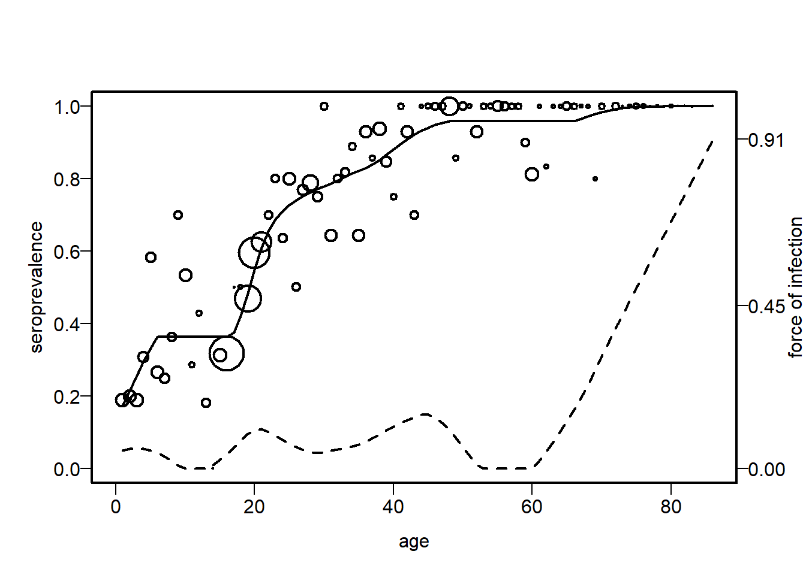
**9.4 P-spline Regression with Shape Constraints
Dùng function của Eilers và Marx